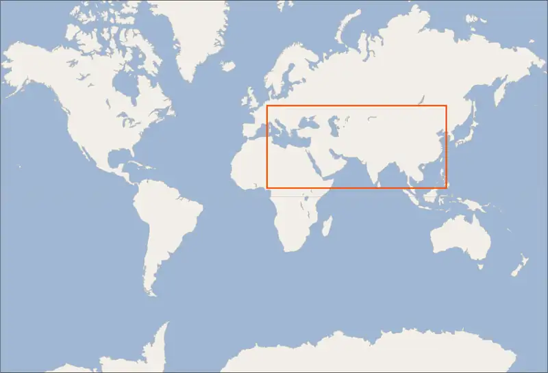
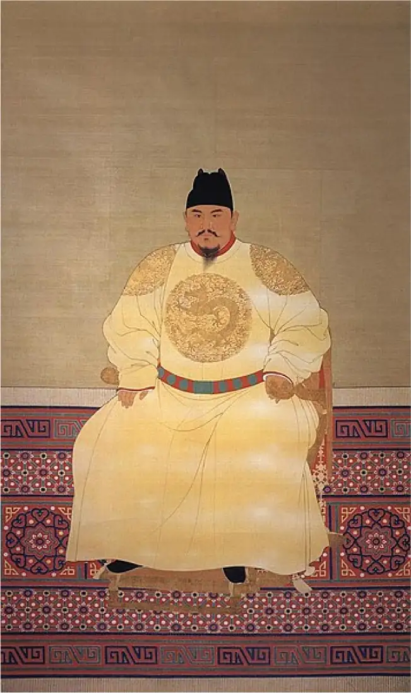
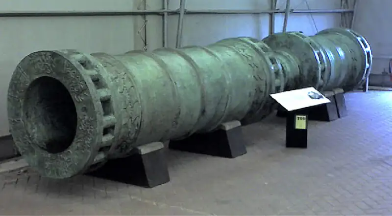

Chapter 17: The Ottomans, the Mamluks, and the Ming¶
Introduction¶
![An image of a large, very colorful, intricately detailed structure is shown on a plain, striped, green, blue, and brown background. The middle of the structure is multi-tiered, with tall arched red openings on the first and second floors with windows on the gray walls behind the openings. A large red door is seen on the bottom level in the middle with a gold rectangular section above. The next tiers show stacked black etched domes and square green, black, and red sections with gold trim and a tall, gold ornament at the very top. Attached to the left and right of the multi-tiered structure are one-tiered gray buildings with rectangle windows and red doors. Small black and red domes line the tops of both wings. The building section on the right also has four thin, tall gray towers, two on each end, with black pointed tops and a gold ornament at the top. In the forefront of the image, six figures in red, orange and purple shin-length coats with gold chest stripes, black belts, and moustaches face left and wear white turbans on their heads. At the right edge of the building a figure in a similar red outfit with no moustache stands facing the left while another figure in a floor length red coat peeks out from behind the left of the building. In the left background three figures stand, in floor-length blue, red, and purple robes over red, gold, and white long shirts, from left to right. They all wear white turbans on their heads and the one in the middle has a beard and moustache. The one on the left holds something in his hand while the other two face each other and their raised hands are touching each other.](img/osx-worldhist-a17-00-suleyman.webp)
The Ottomans rose to prominence at the end of what historians call the Middle Ages and the beginning of the early modern period, arriving on the scene in the thirteenth century. In defeating the Byzantine Empire, the last remnant of ancient Rome, the Ottoman Empire became a gatekeeper between East and West, occupying a central position politically, economically, and culturally in Eurasia. The meeting of the two worlds is represented in the architecture of Istanbul’s Suleymaniye Mosque, which combines Islamic architectural elements such as minarets with a large central dome popularized in ancient Mediterranean temples and churches such as the Hagia Sophia in the same city (Figure 17.1). Hagia Sophia itself was transformed into a mosque by Mehmed the Conqueror when the city fell to Ottoman forces in 1453.
![A timeline with events from this chapter is shown. 1250: Founding of Mamluk Sultanate. 1317: Mamluk Sultanate reaches its largest extent. 1351: Red Turban rebellions begin. 1370: Timur founds Timurid dynasty. 1389: Sultan Murad I killed in Battle of Kosovo. 1396: Ottomans defeat Europeans at Nicopolis; a colorful image is shown of warriors with cannons and guns aiming at a city with people hiding behind buildings and hills in the distance and a figure in a long robe riding on a horse. 1398: Mongols destroy Delhi; a colorful image of figures and animals waging a fight on the backdrop of mountains and rivers is shown. 1406: Construction of Forbidden City begins; an image of a valley is shown with arches, tombs, small hills, with a waterway and roadway that weave throughout. 1453: Ottomans use cannons to capture Constantinople; an image of a long cannon on black posts is shown.](img/osx-worldhist-a17-00-timeline.webp)

17.1 The Ottomans and the Mongols¶
Learning Objectives
By the end of this section, you will be able to:
- Discuss the origins of the Ottoman Empire
- Describe how the conflict between the Ottomans and Timur influenced the development of the Ottoman state
- Describe the effect of the conquest of the Byzantine Empire on Europe and the Ottoman Empire
- Describe the intellectual, cultural, and artistic developments of the Renaissance
As the people of western Europe remade their societies following the collapse of the western half of the Roman Empire, the Byzantines in the east preserved Roman cultural practices for centuries, seeing themselves always as the continuation of a proud and strong Mediterranean empire. By the eleventh century, however, the Byzantines found their power challenged by the arrival of Turkic tribes such as the Seljuks, who settled in the eastern half of their domains and gradually wrested control of the area from them. As different Turkic tribes arrived and settled in the region, one group, the Ottomans, soon rose to prominence over others. Withstanding the last major Mongol onslaught, the Ottomans went on to dominate Asia Minor, invade Europe, and eventually deprive the Byzantines of their last remnants of power. The fall of the Byzantine Empire in 1453 sent many Greek scholars and theologians fleeing to the city-states of Italy, where they contributed to the intellectual and artistic transformation of western Europe in the period known as the Renaissance. By the end of the fifteenth century, the Ottomans had transformed the eastern Mediterranean.
Ottoman Growth¶
With an empire that bordered both the western and eastern worlds, the Ottoman Turks began to play an important role in Asian and European affairs in the thirteenth century. They were not the first Turkic-speaking people to do so, however. In the tenth and eleventh centuries, a group of Turkic speakers from central Asia arrived first through the Iranian plateau before continuing westward into the area that is now modern Turkey. This group, called the Seljuks after their ruler, converted to Islam in the tenth century. Accomplished archers and riders, they were originally employed by the armies of the Islamic Karakhanid and Ghaznavid dynasties of central Asia before carving out an empire of their own in Persia, Mesopotamia, and eastern Asia Minor. Seizing control of Baghdad, the capital of the Abbasid Empire and home to the Sunni caliph, in 1055, the Seljuks came to regard themselves as defenders of the Islamic faith and established the Seljuk Empire. Defeating the forces of the Byzantine Empire in 1071 at the Battle of Manzikert in eastern Anatolia (another name for Asia Minor), the Seljuks soon dominated that region as well (Figure 17.4).
![Two maps are shown with land highlighted beige while water is highlighted blue. White lines crisscross the waters. (a) The map shows the Mediterranean Sea in the south and southwest, the Adriatic Sea, the Tyrrhenian Sea, and the Ionian Sea labelled in the west, the Aegean Sea labelled in the middle, and the Sea of Azov and the Black Sea labelled in the northeast. A large area in the middle of the map is highlighted green as well as an oval section in the middle of the map at the east. A small area at the north of the Black Sea is also green. This green indicates “Byzantine Empire.” Cities labelled within this area are: Thessalonica, Constantinople, Manzikert, and Antioch. Cities labelled outside the green area include: Ravenna, Rome, and Carthage. (b) The map shows the Mediterranean Sea in the south and southwest with the Adriatic Sea, the Tyrrhenian Sea, and the Ionian Sea labelled in the west, the Aegean Sea labelled in the middle, and the Sea of Azov and the Black Sea labelled in the northeast. A large area in the middle of the map is highlighted green and labelled “Byzantine Empire” with the cities of Thessalonica and Constantinople labelled within. A small area at the north of the Black Sea and at the southeast of the Black Sea is also highlighted green. An upside down “V” shaped section in the eastern middle of the map at the east is highlighted pink and labelled “Seljuk Empire.” The cities of Manzikert, and Antioch are labelled within this pink area. Cities labelled outside the highlighted areas include: Ravenna, Rome, and Carthage.](img/osx-worldhist-a17-01-m-seljuks.webp)
In 1077, the Seljuks established a state in Anatolia they called the Sultanate of Rum (“Rome”) because the territory had been taken from the Byzantine Empire, the Eastern Roman Empire. The sultanate steadily absorbed other Turkish tribes in Anatolia and brought them under its control, forming a confederation of tribes more than a unified state. The sultanate’s ruler was primarily a military leader, and the provinces were governed by military commanders. Within the provinces, different regions were controlled by different groups of warriors who often fought with one another and sometimes sold their military services to Byzantine rulers.
Seljuk rulers built mosques and madrasas—schools where scholars taught subjects such as science, theology, and Islamic law—especially in Iconium (now Konya), one of the cities that served as the capital of the Sultanate of Rum. They also established caravansaries, inns where merchants traveling along the Silk Roads could safely rest and conduct business. Trade attracted merchants and artisans, and religious scholars took up residence in the Turkish cities. As the Byzantine Empire lost control of Anatolia, Orthodox Christian clergy and monks fled, loosening the peasants’ ties to Christianity and making it easier for many to convert to Islam. Gradually, Anatolia became more Islamic in appearance and nature, and the Byzantine emperors’ grip on the region grew ever weaker.
The Seljuk Empire, centered as it was in Baghdad in Mesopotamia, faced many struggles both from within and from outside forces. The arrival into the region of the western crusaders at the very end of the eleventh century and the establishment of the Crusader States caused major political and social shifts in the region, even though those states would eventually be defeated. The Seljuks were defeated by the Khwarezm-Shah, a central Asian dynasty, whose founder had been enslaved by the Seljuks.
As the Seljuk dynasty lost control of the region, the Seljuk Sultanate of Rum—a splinter state of the original group—was left as the sole center of Seljuk power in Anatolia. Even there, however, political and military change continued. Following the Mongols’ invasion of eastern Anatolia and their decisive victory over the Seljuks at the Battle of Köse Dağ in 1243, the Sultanate of Rum splintered into numerous small, independent states called beyliks. In the fourteenth century, one of these beyliks began to rise to prominence as Seljuk fortunes declined in the wake of the Mongol invasions. This beylik was led by a man named Osman, and his followers came to be known as the “Osmanli” or “Ottomans.”
The Ottomans were Turkic-speaking pastoralists who occupied lands in northwestern Anatolia. Like the Seljuks, they regarded themselves as ghazis, warriors who fought to expand and protect the borders and influence of Islam, and this recognition came to form an important part of Ottoman Turkish identity. The Ottomans had originally stepped into the power vacuum left in northwestern Anatolia by the attack on Constantinople in 1204, when European crusaders raided, ransacked, and demolished parts of the city. Civilians were brutally assaulted and killed. Priceless religious relics were looted and destroyed, erasing ties to the history of the Byzantine Empire. After this “sack” of Constantinople, Venice and its allies divided the empire, and political upheaval took place in the years that followed. Although the Byzantines attempted to rebuild their capital and state, they were no match for the Ottomans. The empire lasted another two hundred years, but it controlled relatively little territory in Anatolia. The Ottomans laid siege to the Byzantine cities of Anatolia, conquered them, and made one, Bursa, the capital of a growing Ottoman state with imperial ambitions. They built mosques and madrasas in the city, turning it into an important religious center.
Following Osman’s death, his son Orhan I, who took the title of sultan, expanded Ottoman territory into Europe. In 1354, his troops established a base on the European peninsula of Gallipoli, on the northern side of the Dardanelles, one of the straits that separate Asia Minor from Europe. Control of Gallipoli gave the Ottomans control over oceanic traffic between the Mediterranean and the Black Sea. It also gave them the ability to interfere with ships bound for Constantinople, which sat on the European side of the straits of the Bosporus, should they so desire. The Ottomans steadily took control of the European portion of the Byzantine Empire, the area that is now northern Greece, southern Bulgaria, and Thrace, the western part of modern Turkey.
Orhan’s son Murad I established a new capital at Edirne, on the European side of the Dardanelles, in 1362. Turks from Anatolia were invited to settle in Ottoman-controlled territory in Europe and take over the lands of fleeing European landowners. The European peasants who came under Ottoman control did not necessarily resent their new masters; the majority were Orthodox Christians, and they were allowed to practice their faith without interference so long as they paid the special tax, the jizya, and recognized their status as Ottoman subjects. The Ottomans also realized that non-Muslim clergy could help in the governing of their empire, because people were accustomed to turning to their religious leaders for direction on a variety of issues. To win the assistance of Christian clergy, therefore, the Ottomans refrained from efforts to stamp out their religion. Many peasants likely regarded the religiously tolerant Ottomans as better overlords than the European Roman Catholic soldiers, who had attacked the Greek Orthodox Byzantine Empire on more than one occasion. They also welcomed the lighter tax burden imposed by the Ottomans.
Murad sought to take advantage of the death of the Serbian king in 1355 and incorporate his land into the Ottoman domains as well. At the Battle of Kosovo in 1389, the Ottomans defeated the Serbian army and made Serbia, the last major Orthodox Christian state, a vassal of the empire. Both Murad and the Serbian ruler Prince Lazar died in the battle, although Serbian myth claims that a Serbian soldier used trickery to secretly kill the Ottoman sultan in his tent (Figure 17.5).
![A colorful image shows three figures on horses riding toward the left of the image on bumpy green and beige ground with small patches of grass. Sandy mountains are seen in the background and a bright yellow sky. Words in black script are written across the middle of the image at the top. The figure on the left wears a bright blue long shirtdress with gold stripes across his chest with an orange sleeveless robe with white and black trim. He wears gold boots and a yellow and white brimmed large hat on his head. He has a red beard and a grim expression. His horse is white with brownish scales, a red and gold saddle and gold reins. The two figures riding behind the first figure ride a brown and a red horse with gold saddles and reins. The figures both wear long red robes with gold stripes on the front and tall red rectangular hats with gold trim. Both have moustaches and the one in the front holds a gold colored bow with a quiver of arrows. They face each other as they ride next to each other.](img/osx-worldhist-a17-01-muradi.webp)
Link to Learning
The Battle of Kosovo in 1389 serves as a focus for Serbian national identity, and its anniversary is a national holiday. In this blog, you can learn more about how the Battle of Kosovo has affected Serbian views about political independence.
Murad’s son and successor Bayezid I (called “the Thunderbolt”) attempted unsuccessfully to eliminate all remaining Byzantine governance in the region by capturing Constantinople. In 1396, the Ottomans blockaded the city, but the pleas of the Byzantine emperor led Pope Boniface IX to call for a crusade to rescue the Greek Orthodox Christians from the Muslim Turks. Roman Catholic knights from throughout Europe responded. Ottoman troops, fighting alongside Bayezid’s Serbian vassals, crushed the crusader army at the Battle of Nicopolis on the Danube River (Figure 17.6). The blockade of Constantinople ultimately failed, however, for the Ottomans had no way to break through the city’s walls, and Bayezid soon found himself facing a more formidable foe, the Mongol conqueror Timur.
![A colorful image is shown of a battle taking place in a city set in the hills. At the top left of the image many buildings are shown set close together in various colors of brown, blue, white, and red. Some have domes, some have tiled roofs, and some have pointed or notched tops. Red flags fly from poles on three of the buildings. Two oversized figures in white turbans are seen peeking out from behind some buildings. Cannons stick out some of the windows in the lower buildings. A dark blue mountain shows behind the buildings and four other white domed buildings are seen behind the mountains. To the right of the city are five slate and orange colored tents anchored to the ground with white ropes and gold ornaments at the top. Surrounding the tents are various figures in hats and colorful attire. A gold flag is seen flying on a pole with the group of figures behind the farthest tent. Left of the city buildings are two very large figures on horses dressed in richly decorated long robes and large hats. Two other figures in tall hats and robes stand in front of the horses, one with a tall stick on fire in his hand. In front of them are blue mountains and green trees, then a river. On the right side of the river two figures in green armor and helmets ride horses while six figures in colorful hats hide behind them behind the hillside. In front of the riders are two figures in red, black, and white outfits with hats holding weapons and a stick with fire. In the bottom right foreground of the image four stone towers are seen, one with a gold flag flying at the top. Between the towers three cannons are nestled, with a fourth at the top right. Various figures in colorful clothing and armor are seen standing and laying around the cannons and aiming them at the city.](img/osx-worldhist-a17-01-nicopolis.webp)
The Timurids and the Aftermath of the Battle of Ankara¶
Timur was a Mongol from the Barlas tribe, which had been exposed to and assimilated Turkic culture. He was born in central Asia, in a part of the Chagatai Khanate (now modern Uzbekistan), in the 1320s or 1330s. At some point early in his life, he suffered an injury that left him lame in one leg and without two fingers. According to some stories, he had been wounded while attempting to steal sheep, but he may well have sustained his injuries in battle.
Timur sought to rebuild the empire that Chinggis Khan had controlled at the time of his death. Because he could not establish descent from Chinggis, he could not claim the title of khan himself. In the 1360s, he gained control of part of the Chagatai Khanate and placed one of Chinggis’s descendants, Soyurgatmish, on the throne, claiming to act in his name. He also married a female descendant of Chinggis and adopted the title “Royal Son-in-Law.”
Timur soon looked beyond central Asia for lands to control. In the 1380s and 1390s, he conquered Persia, portions of Iraq and Afghanistan, and Syria. He taxed the inhabitants of vanquished cities heavily and sent skilled artisans to work in his capital in Samarkand, but he spared people’s lives. Cities that did not submit were treated brutally, however. For example, when the city of Isfahan, in Persia, surrendered peacefully, he treated the residents leniently. However, when the people later rose in revolt, Timur responded unequivocally: he killed an enormous portion of the city’s population, with some reports claiming that 100,000 to 200,000 people were killed. Eyewitness accounts report his soldiers amassing piles of severed heads. Timur’s troops then turned north to the Russian territory controlled by a former follower named Tokhtamish, the khan of the Golden Horde, who sought the same lands in central Asia that Timur claimed. After destroying the Russian cities of Astrakhan and Ryazan, Timur defeated Tokhtamish’s army in 1391.
In the late 1390s, Timur turned eastward toward India. In 1398, he attacked the city of Delhi, the capital of the Muslim-ruled Delhi Sultanate. The sultan’s army rode into battle on war elephants clad in chain mail, frightening Timur’s troops, who had not seen elephants before (Figure 17.7). Timur piled hay on the backs of his camels, set the hay on fire, and sent the burning, panicked animals into the enemy’s lines, scattering the elephants. Victorious, Timur then destroyed Delhi.
![A tall colorful rectangle image is shown with a thin brown border. At the top and bottom, panels are shown with black scripted writing. The top of the image shows brown and yellow hills and mountains along a blue sky. In the hills, four figures in solid colored shirts and turbans are seen holding round objects in their hands above their heads. To the left of them are three other figures in solid clothing and turbans, holding shields. At the foot of the hills two figures in orange and yellow robes and white turbans fight with each other. In front of them are two soldiers in brown helmets aiming bows and arrows at a figure on a horse to their right. He wears a purple robe and holds a white and pale green shield over his head. In between the soldiers and the rider on the horse a figure in blue and red clothing lies on the ground. The bottom half of the image shows three large black elephants with white tusks highly decorated with saddles, the one in the middle wearing a red mask, running toward the left. The elephant at the bottom shows a figure in a white shirt and green pants hanging off of its saddle. Behind the elephants, four riders are riding on horses, two aiming arrows at the elephants while two wield swords in the air. They all wear colorful shirts and head coverings. One man in purple falls to the ground in front of the horse in the lower right of the image.](img/osx-worldhist-a17-01-delhiconq.webp)
Timur also coveted lands in Syria that were controlled by the Mamluk Sultanate and territory in Anatolia that was claimed by the Ottomans. Bayezid I had been steadily conquering weaker rulers in Anatolia and forcing them to become his vassals. In 1397, he defeated the ruler of the beylik of Karaman and went on to subdue smaller Anatolian states. Unwilling to submit to his domination, however, Turkish tribes and Ottoman vassals who Bayezid I believed owed allegiance to him turned to Timur, considering him their means of achieving independence from Ottoman rule. In turn, enemies of Timur such as Kara Yusuf, the leader of the Black Sheep Turks, and Sultan Ahmed, the ruler of the Persian Mongol Jalayir dynasty whose lands Timur had conquered, turned to Bayezid for assistance. Timur wrote to Bayezid, demanding that the Ottoman ruler cease aiding his enemies. Bayezid responded with insults and sent his forces to attack an ally of Timur’s in Armenia.
In 1400, Timur struck back, destroying the city of Sivas in Anatolia, part of Bayezid’s domain. He then went on to wage war against the Mamluk sultans in Egypt in Syria, preventing Bayezid from turning to them for help. He also entered into an allegiance with the Byzantines against the Ottomans, amassed forces from throughout his empire, and headed for Anatolia. Bayezid broke off his siege of Constantinople, which had begun in 1396, and rushed to meet him. In July 1402, Timur’s troops clashed with the Ottoman army at the Battle of Ankara in Anatolia.
On the field at Ankara, one of the great weaknesses of Bayezid’s Ottoman state was revealed. The Ottomans had built their empire in Anatolia by conquering other Turkish states and absorbing their rulers and the rulers’ descendants into their administration. These men, Bayezid’s unwilling vassals, had no wish to risk their lives for their Ottoman overlords. In addition, Bayezid had chosen to live primarily at Edirne, in Thrace. He had adopted elements of Greek culture and, as part of a strategy to build alliances with other rulers, had taken as wives or concubines a number of non-Turkish women, including the daughter of Prince Lazar. This decision further alienated him from the Turkish nobility of Anatolia. When Timur’s forces attacked at Ankara, therefore, many of Bayezid’s Turkish vassals abandoned the field and left Bayezid to his fate, happy to be free of Ottoman control. The Ottomans were defeated, and Bayezid and his sons Musa and Mustafa were captured by Timur. Bayezid remained Timur’s prisoner until he died a few months later.
Following his rout of the Ottomans and having conquered most of the domains of Chinggis Khan and his sons and grandsons, Timur turned eastward to claim his last prize—China. In 1368, the Mongol Yuan dynasty in China had come to an end. Its successor, the Chinese Ming dynasty, sought to make a tributary vassal of Timur, but the Ming emissaries and the soldiers who accompanied them had instead been imprisoned in Samarkand, the capital of Timur’s empire, in the Mongol heartland near the place of his birth. In December 1404, Timur set out to cross central Asia on his way to China. Within a few months, however, he fell ill, and in February 1405 he died. The invasion of China ended before it had begun, and the Chinese emissaries were released.
At the time of his death, Timur had conquered much of the land claimed in the original Mongol conquests of Chinggis Khan and his descendants. Unlike them, however, Timur made no real effort to rule the places he seized outside Persia. His armies conquered, plundered the riches of the defeated cities, seized artisans and whoever else might be of use to Timur, and sent the wealth and captives on to Samarkand. Thus, it was relatively easy for most places that Timur had conquered to regain their independence. Anatolia is a good example. Following his defeat of Bayezid I, Timur departed, leaving Bayezid’s sons to battle among themselves for control of their father’s lands. Although Bayezid’s son Mehmed declared himself a vassal of Timur, Timur did not assist him in his civil war against his brothers. Following Timur’s death, his own sons and grandsons fought over the lands he had conquered (Figure 17.8). In 1409, his son Shah Rukh emerged as his successor and the next head of the Timurids, the name given to the dynasty founded by Timur.
![A map is shown of land highlighted in beige and water highlighted in blue. White lines crisscross the water and blue and gray lines run in various directions all over the beige lands. A white dashed line in the middle of the map runs across the water and is labelled “Tropic of Cancer.” The Black Sea, the Sea of Marmara, and Van Golu (Lake Van) are labelled in the northwest of the map, while the Caspian Sea and the Aral Sea are labelled in the north with the Aydar Kul and the Ysyk-Kol in the northeast. Lake Nasser, the Red Sea, the Persian Gulf (Arabian Gulf), Strait of Hormuz, Gulf of Oman, Arabian Sea, and the Bab el Mandeb are labelled in the south. A large expanse of the map is highlighted purple and labelled “Timurid Empire.” The purple highlighted area runs from the southeast corner of the Black Sea in the west to almost the end of the map in the east, from the Aral Sea in the north down to the Persian Gulf (Arabian Gulf) and the Gulf of Oman in the south.](img/osx-worldhist-a17-01-m-timuremp.webp)
While many in Asia regarded Timur as a villain, he was a hero of the Turks and Mongols of central Asia. Ibn Khaldun, the North African Muslim historian, credited him with unifying the world’s Muslims into a single empire. Timur’s greatest legacy may be an artistic one. Although conquered people might have been met with brutality, artists, architects, and artisans were spared and sent to Samarkand. During Timur’s lifetime, the city was in a constant state of construction, and buildings like the Bibi Khanum Mosque were erected or remodeled to please him. The Muslim traveler Ibn Battuta praised the city’s beauty, and its gardens made visitors forget the arid lands that surrounded it (Figure 17.9). Timur’s grandson Ulugbek built a madrasa (an Islamic school) and an observatory in Samarkand and invited Muslim mathematicians and astronomers to the city, making it an important site of learning in the fifteenth century. Many Europeans of the time also regarded Timur, whom they called Tamerlane (“Timur, the Lame”), as a hero.
![Two images are shown. (a) A photograph of the front of a highly decorated mosaic building is shown. The front is a large pointed arched opening showing a similarly shaped door in the recess. On either side of the door are two even smaller similar shaped archways stacked on top of each other. On either side of the top of the large archway are images of an orange tiger with a long tail surrounded by blue, red, and white mosaic tiles. The rectangular perimeter of the building is decorated with various highly ornate mosaic tiles in green, brown, and beige. On either side of the rectangle, a square shaped mosaic matching building sits with a short round base with a striped dome on tope. All are decorated in matching mosaic tiles with the dome is teal blue. A tall, intricately decorated mosaic tiled tower sits at each end of the square building with a maroon and gold colored ovalish top. Stairs are seen in front of the doorways and large green trees are on either side of the stairs in a square area. In front of the building is a bricked walkway that extends across the image and along the sides of the building. The background shows other buildings in various shapes and sizes, trees, and a landscape of a city in the far background and a cloudy sky. (b) An image of a drawing is shown. A doorway on the top left has a highly decorate mosaic arch at the top and the open area shown in the rest of the image shows an orange background. In the doorway, a man in a green, long sleeved shirt dress with a red coat holds a long, thin stick over his head. He has a turban, beard, and black boots with a sword at his belt. In the right, top back of the image, three men in brow, green, and blue robes, two with turbans, are seen with various tools sawing, splitting with an axe, and sanding with a black object while other brown pieces surround them. In front of the man in the doorway, three figures are sitting on the ground in solid-colored robes and turbans with their arms extended in front of them. To their right, five figures similarly dressed sit on the ground in front of white, square objects, some holding thin, black items in their hands. In the forefront of the image on the left, a black tusked elephant is seen wearing gray and red décor on his head and a red blanket over his back. A man in an orange robe and white turban sits on the elephant’s neck holding a whip and a large, white object sits on the elephant’s saddle. The elephant’s trunk is around the waist of a dark skinned figure, bent at the waist and holding on to a large, white square object with another figure on the other side. Behind them is a two wheeled cart filed with large, square white objects pulled by a black and white horse with two figures on either side of the horse in long robes and turbans, looking at the elephant.](img/osx-worldhist-a17-01-registan.webp)
The Ottoman Conquest of the Byzantine Empire¶
Following the Battle of Ankara in 1402, the sons of Bayezid who had remained free—Mehmed, Suleyman, and Isa—fought among themselves for control of the Ottoman domains. Suleyman held the Ottoman lands in Europe, Isa controlled Anatolia, and Mehmed I ruled Amasya, a region on the Black Sea coast. When Musa was released from Mongol custody, he also joined the fight, and Mustafa later contended for the throne as well.
In 1413, Mehmed emerged victorious in the civil war with his brothers. He and his son and heir Murad II reorganized and expanded the domains of the Ottomans. Members of the cavalry and other highly placed members of the Ottoman administrative and military elite were each granted a timar, the right to collect taxes from merchants, farmers, and artisans in a particular geographical area (Figure 17.10). Timars were awarded regardless of religion or ethnicity, and occasionally elite women were given them as well. At times, conquered local elites were allowed to retain control of their former lands as timariots (holders of a timar). The taxes they collected supported them, so the state did not need to pay them a salary or hire tax collectors.
![An image of a figure is shown on a pale orange background inside of a red rectangle. The figure has a full white face with sagging cheeks and a black moustache. He wears a long green shirt dress under a dark brown striped robe with light brown trim and collar. His shoes are golden and his helmet is dark and light brown with a white cloth tied around it. On his back is a red and brown shield with a red strap running across his chest. A sword in a red and brown sheath is hanging across his pelvis while the top of a sword shows at the red belt across his waist. A red quiver with white and black arrows hangs at his left waist. .](img/osx-worldhist-a17-01-sipahi.webp)
The practice of awarding timars to members of the military ensured their loyalty. The land ultimately belonged to the sultan, who would revoke a timar if the holder did not continue in his service. A timar might also be lost if the population of the land declined; this encouraged timariots to treat the people on their holdings well. Timariots also tried to make the lands they controlled more agriculturally productive. The more crops produced, the more taxes they could collect. They were responsible for maintaining order on their lands, but they could not impose punishments without the permission of a judge appointed by the sultan. The timar was nonhereditary; upon the timariot’s death, the sultan awarded the vacant timar to someone else. This prevented the development of an independent hereditary class of timariots.
The main goal of Mehmed I and Murad II was to conquer Constantinople. Muslim rulers since the seventh century had attempted to capture the Byzantine capital and had always failed. Both Mehmed and Murad realized that in order to rebuild the Ottoman state, they had to drive out the Byzantine rulers. The Byzantine emperor Manuel II had assisted Mehmed’s rivals for the Ottoman throne, attempting to keep the Ottomans weak by prolonging the civil war. The Byzantines were also close allies of the Venetians and Genoese, who controlled trade in the Aegean and the Black Seas and whose ships could interfere with Ottoman efforts to control both sides of the Dardanelles.
Murad II laid siege to Constantinople in 1422, but the effort failed because the Ottomans lacked artillery to destroy the city walls. Murad was also distracted from the siege by his need to combat yet another claimant to the Ottoman throne. As they had done before, the Byzantines called upon European Christians for assistance against the Ottomans. The pope called for a new crusade, and the Roman Catholic knights of Europe responded. Murad defeated them in 1444 at the Battle of Varna, in eastern Bulgaria (Figure 17.11). Nevertheless, Constantinople stood firm. The city was only a shadow of what it had once been. At its height, somewhere between 500,000 and one million people had lived within its walls, but the bubonic plague and Ottoman sieges had reduced the number to perhaps fifty thousand. Nevertheless, so long as Constantinople stood on the western shore of the Bosporus controlling access to the Black Sea, the Ottomans could not rest easy in their domains.
![A richly colorful image is shown within a mustard colored rim. In the right middle of the image, a figure sits on a gold and orange throne in long pink, brown and black robes with a white and black tall turban on his head. He holds a long sword across his lap. Behind him are tall richly decorated tents anchored with gold ropes amid blue mountains. Behind the figure at his left stand three figures in long blue and red robes with tall gold headdresses covered in red cloths. To the right of the seated figures stand three men in long richly decorated robes and bright white turbans and two soldiers in striped green outfits with matching helmets and orange boots. On the orange triangle patterned floor with pink edges in front of them lies a golden helmet in pieces. In the bottom third of the image is a pale blue floor with black tick marks. At the left forefront stand three soldiers in green and yellow striped tall helmets with a long white feather at the top, gray and gold armor, and orange and blue boots. They look at a figure in front of them on the ground. The figure on the ground wears green and gray striped armor, black boots, and has brown hair and a dark moustache. The head of the figure is separated from its body and red blood is oozing out from both parts. In the right forefront of the image eight people in solid colored robes and gold hats with white cloths on top are standing in a row looking at the beheaded figure. Behind them stand three people in richly decorated robes in rich colors with bright white turbans on their heads, two holding long sticks.](img/osx-worldhist-a17-01-varna.webp)
It fell to Murad II’s son Mehmed II (also called Mehmed the Conqueror and Mehmed the Great) to destroy the Byzantine threat. He was better prepared than his father had been. In 1453, he summoned his Muslim and Christian vassals from Anatolia, Thrace, and the Balkans. With the vassals and a core of six thousand elite professional soldiers, he marched to the Bosporus. Ottoman forces included more than one hundred newly constructed ships to prevent Constantinople from receiving reinforcements and supplies via the sea. He also summoned European gunsmiths, the most important of whom was the Hungarian named Urban, to craft bombards, an early form of cannon. One gun was so large that it could fire a twelve-hundred-pound granite ball more than a mile. Constantinople’s defensive walls, which had guarded the city since the fifth century, could not withstand the Ottoman artillery (Figure 17.12).
![A picture of a brown bricked wall with darker brown bricks making stripes is shown on the right of the image. In front of the wall is an area filled with dirt at one end and squares of green vegetation at the forefront. At the end of the dirt stands a brick tower with three openings toward the top and notches across the top. To the left of the dirt area is another wall with arched openings on the right side and notches at the top on the left side of the wall. In the far left background a short brown building can be seen with two levels of rectangle windows and a pointed roof. A parking lot filled with cars and another white, red, and blue building can be seen. Beyond the brown building green trees are seen and ten tall gray rectangular buildings stand in the very far background. A clear blue sky shows.](img/osx-worldhist-a17-01-theodosian.webp)
On the morning of May 29, 1453, after a siege of fifty-seven days, the Ottoman guns breached the walls, and Mehmed’s soldiers rushed into the city. Perhaps twenty thousand people were left to defend it, including the last Byzantine emperor, Constantine XI Palaeologus, who died fighting for his city. After their Genoese commander was wounded, many defenders abandoned their posts along the walls, leaving them deserted during battle. Constantinople’s residents carried religious icons to the walls and prayed for deliverance. However, they put up little resistance, and the city fell to the Ottomans.
Dueling Voices: The Fall of Constantinople
Following are two accounts by European Christians of the fall of Constantinople in 1453 and the behavior of Mehmed II, the conquering sultan. The first excerpt is from a letter from the Convent of the Order of Saint John on Rhodes to the military commander of Brandenburg (present-day Germany), a principality of the Holy Roman Empire. The second is an eyewitness account of the event.
“After the great Turk had besieged Constantinople by land and sea, on the twenty-ninth of the May just passed he seized the city by force of arms, killed the emperor of Constantinople, cut off the heads of many nobles, gave the entire city over to plunder, and cruelly tortured many. He then obtained the city of Pera, which the Genoese held, without force of arms, made it a tributary, and tore down its walls. This also happened to the walls of Constantinople. . . . It is believed that he is preparing a new fleet from scratch, since he intends to make all the islands of the Aegean archipelago subject to him or to destroy them if he can. For his heart swells with pride and he boasts that he has equaled or surpassed the deeds of Alexander of Macedon. He also threatens that he will attempt to do what Alexander never did—push into Italy and the regions of the West with his arms and might and see whether fortune shall favor him there as it has throughout the East. —a letter from the Convent of the Order of Saint John on Rhodes to the Margrave of Brandenburg, June 30, 1453, translated by W.L. North”“The enraged Turkish soldiers . . . gave no quarter. When they had massacred and there was no longer any resistance, they were intent on pillage and roamed through the town stealing, disrobing, pillaging, killing, raping, taking captive men, women, children, old men, young men, monks, priests, people of all sorts and conditions. . . . This medley of all nations, these frantic brutes stormed into their houses. . . . Temples were desecrated, ransacked and pillaged . . . sacred objects were scornfully flung aside, the holy icons and the holy vessels were desecrated. Ornaments were burned, broken in pieces or simply thrown into the streets. . . . When Mehmed (II) saw the ravages, the destruction and the deserted houses and all that had perished and become ruins, then a great sadness took possession of him and he repented the pillage and all the destruction. Tears came to his eyes and sobbing he expressed his sadness. “What a town this was! And we have allowed it to be destroyed!” His soul was full of sorrow. And in truth it was natural, so much did the horror of the situation exceed all limits. —“The Sack of Constantinople, 1453,” EyeWitness to History, 2011”
- In what ways are these accounts similar? How do their depictions of Mehmed II differ?
- How did the Ottomans create a multiethnic military force? Why would that be useful?
Many Muslim scholars believed the conquest of Constantinople had been predicted in a hadith, an account of the sayings and actions of the prophet Muhammad. After his capture of the city, Mehmed turned eastward, incorporating the Turkish state of Karaman, the home of the important Islamic religious center of Konya, and other lands ruled by Turkish tribes in eastern Anatolia. In 1461, he sent the Ottoman fleet to conquer Trebizond, an offshoot of the Byzantine Empire and an important trading center on the Black Sea. In Europe, he gained control of most of the southern part of Greece, defeating the Byzantine princes who ruled the area, as well as Bosnia and Albania. He also wrested the Black Sea port of Kaffa from the control of Genoese merchants. At his death, the Ottoman Empire controlled all of Anatolia and nearly all of the Balkans.
Mehmed II, despite being referred to regularly as “the Conqueror” by historians, was a builder more than a destroyer, however. Upon conquering Constantinople, he declared it the new capital of the Ottoman Empire, replacing the city of Edirne. He dispatched soldiers to clear away the ruins left from the siege and the Ottoman assault, and he immediately set about appointing a mayor and other important city officials to establish and maintain order. Rather than drive out the city’s European merchants, he allowed them to stay, to retain their property, and to continue to worship in their churches. He demanded only that the Genoese merchants remove the walls that surrounded Galata, the Genoese trading quarter of Constantinople, and surrender their armaments. To protect his new Christian subjects, he forbade his Turkish troops to enslave the Europeans.
Mehmed regarded himself not as a usurper but as the rightful successor to the Byzantines. He declared himself Caesar, the heir to the old Roman imperial throne. He appointed a new leader of the Eastern Orthodox Church, Gennadius II, who in turn recognized Mehmed’s claim as the legitimate heir of the last Byzantine emperor. The last emperor’s actual heirs, his nephews, were taken into Mehmed’s service and occupied important administrative positions in the empire. One served as Grand Vizier, or chief minister, under Mehmed’s successor Bayezid II.
Mehmed embarked on an ambitious campaign to rebuild Constantinople, now called Istanbul. He built the new Topkapi Palace, where he ruled the empire. The palace also contained his private household, or harem. He ordered that the Byzantine cathedral of Hagia Sophia be left intact and converted into a mosque. He rebuilt the city walls, constructed a weapons foundry, and established a hospital. He also ordered a new mosque, the Fatih Mosque (“Conqueror’s Mosque”), to be built in the city (Figure 17.13). Near the mosque, he erected numerous madrasas in which Muslim scholars taught science, Islamic law, and theology.
![A faded beige painting is shown on a water stained background. At the bottom an open space is shown with a row of short houses lining most of the edge and two small boats at one end. Behind the houses stands a tall black bricked wall with notches across the top and four towers dividing the wall. Beyond the wall are several rows of one to two-tiered houses with rows of windows on each level and peaked roofs. Interspersed among the houses are green trees of various heights. Toward the top of the image a brick wall with openings at the top and domed roofs surrounds various sized tall buildings behind it with domes tops and openings on all levels. In the middle a large structure stands with a large gold colored dome at the top as well as smaller domes along a lower level. Two tall spires stand at one end of the building. Faded script writing is seen along the top.](img/osx-worldhist-a17-01-fatihmosq.webp)
Link to Learning
Visit this UNESCO site to learn more about Istanbul and to view pictures of its famous historic sites.
Mehmed had a great thirst for knowledge. He spoke many languages and amassed a library filled with works in Turkish, Greek, Latin, Persian, and Arabic. He invited Muslim scientists to Istanbul and attended debates of religious scholars. He collected Greek antiquities and brought Greek scholars and Italian artists to Istanbul. Some of these artists, such as the Italians Gentile Bellini and Paolo Veronese, painted portraits of him (Figure 17.14).
![A painting of the top half of a man on a dark black background is shown. He wears a gold tinted white turban on his head with a red top, has a long pointy nose, brown beard, pale skin, and wears a red and black robe and brown furry wrap. He is shown behind a gray half wall with dark gray and gold designs across the top front. An orange drape hangs over the middle of the half wall decorated with red lines, jewels, and a sparkly crown ornament in the middle. An arch comes out of the half wall with a black and gold intricately decorated bottom and a gray and gold top, with etchings and gold adornments at the top. Three five point crowns are drawn on the back background on each side of the decorated arch.](img/osx-worldhist-a17-01-mehmetbell.webp)
As Mehmed conquered other parts of the Balkans and of Anatolia, including beyliks that had broken free of Ottoman control following Bayezid I’s defeat at the Battle of Ankara, he brought artisans and prisoners of war to Istanbul to rebuild the city. As earlier Ottoman rulers had done, Mehmed allowed Christians and Jews in his lands to worship as they pleased. This arrangement was an early appearance of the Ottoman millet system, in which religious communities were allowed a substantial degree of autonomy and were governed by their own leaders and their own law codes. In addition to naming a head of the Eastern Orthodox Church, Mehmed established the position of hakham bashi (“chief rabbi”) to lead the Ottoman Empire’s Jewish community. He also invited the head of the Armenian Apostolic Church to establish a house of worship in Istanbul; because the Eastern Orthodox Church, the religion of the Byzantine rulers, regarded the Armenian church as heretical, it had been banned from the Byzantine capital. And although the Roman Catholic Church refused to recognize his right to rule Istanbul, Mehmed allowed Catholic clergy to travel throughout Ottoman lands and worship freely.
Mehmed also moved to exert authority over Islamic clergy in his domains. He made teachers at madrasas employees of the Ottoman state. He issued kanun, laws made by the sultan, as opposed to sharia (religious law) interpreted by Islamic judges, and compiled them in the Kanun-name (“Book of the Law”). Kanun dealt with issues that sharia often did not address, such as taxation or punishment for certain crimes. Mehmed also made use of kanun to centralize his authority and gain unchallenged control over the Ottoman state.
With the fall of the Byzantine Empire and the collapse of Timurid authority, the Ottoman state could now assert its authority in both the East and the West, effectively making itself a gatekeeper between the two worlds. Following their defeat of the Byzantine Empire and their capture of Constantinople, the Ottomans gained control of part of the Silk Roads that brought silk, spices, and other luxury goods from East Asia. Besides controlling the overland route, the Ottomans commanded Red Sea ports in Egypt after defeating the Mamluk Sultanate in 1517, which gave them additional control over the spice trade. By the late fifteenth century, Ottoman ships were trading with India, and goods such as Chinese silks and porcelains furnished the homes of the wealthy in Istanbul. The Ottomans also dominated trade on the Black Sea, which until then had been the province of the Venetians and Genoese. The exclusion of Italian merchants from their traditional trade routes, the heavy taxes imposed on goods that traveled overland, many Europeans’ dislike for transacting business with Muslims, and the expense of overland trade led western Europeans to seek all-water oceanic routes to South and East Asia.
The Renaissance¶
The fall of Constantinople was lamented in Europe as signaling that no significant force remained to counter the Muslim advance westward. For many historians, it also marks the end of the European Middle Ages. As the Byzantine Empire collapsed, many Greeks sought refuge in other lands, often wealthy merchants and state officials who brought their riches with them. Many settled in Italy, especially in Venice and Rome. Those who came to Venice were assisted by Anna Notaras, a wealthy Byzantine noblewoman who had taken up residence in the city before Constantinople fell.
Byzantine scholars, theologians, artists, writers, and astronomers also fled westward to Europe, bringing with them the knowledge of ancient Greece and Rome that had been preserved in the eastern half of the Roman Empire after the western half fell. Among the texts they brought were the complete works of Plato and copies of Aristotle’s works in the original Greek. Access to these and other writings, many of which had been either unknown in western Europe or known only in the form of Arabic translations that arrived at the time of the Crusades, greatly influenced the course of the Italian Renaissance.
The Renaissance, which means “rebirth” in French, was a period of intellectual and artistic renewal inspired by the cultural achievements of ancient Greece and Rome and marking the dawn of the early modern world. It began in the city-states of northern Italy that had grown wealthy through trade, especially trade with the Ottomans. Beginning in the 1300s, scholars there turned to the works of Western antiquity—the writings of the ancient Greeks and Romans—for wisdom and a model of how to live (Figure 17.15). Among these scholars was Petrarch, who encouraged writers to adopt the “pure” Classical Latin in which the poets and lawmakers of the Roman Empire had written instead of the form of Latin used by medieval clergy. He advocated imitating the style of the Roman orator Cicero and the foremost of the Roman poets, Virgil.
![An image of a painting of wavy bluish-green water is shown with a blue sky in the background and tall green trees at the right. In the middle of the image, a pale, naked woman with long red, curly hair stands at the front of a giant golden colored scalloped shell. Her long hair blows to the right of the image and she holds some of her hair in front of her pelvis and her hands partially cover her breasts. In the left portion of the image a man in blue cloths covering his pelvis and draped from his shoulders is floating in the air holding a naked woman with a brown cloth tied around her shoulders. She has red hair and pale skin. Both have dark wings and are blowing white air at the naked woman in the shell. Pink flowers with green leaves are falling around the man and woman. In the right of the image a woman with long curly and braided orange hair is dressed in a white dress decorated with black flowers. She appears to be floating close to the shore and holds a large light red cloth with decorations all over toward the naked woman in the shell.](img/osx-worldhist-a17-01-botticelli.webp)
Petrarch has been called the father of humanism. Humanism was a movement born in Italy in the fourteenth century that focused on the study of human beings, human nature, and human achievements, as opposed to the study of God. Humanists stressed the beauty and dignity of humanity instead of focusing on its sinful, “fallen” nature. They believed the classical worlds of ancient Greece and Rome could provide contemporary people with untold wisdom and a model for life.
Beyond the Book: The Arnolfini Portrait
Humanism influenced the manner in which people were depicted in works of art as well as the types of people who were portrayed. Many of the subjects of Renaissance paintings were wealthy members of the merchant class. Merchants might appear as worshippers in paintings with religious subject matter, but many paintings of the period also depicted such people in secular settings as well, often in a manner meant to display their wealth. This 1434 painting, by Jan van Eyck, an artist from the Netherlands, is believed to depict the Italian merchant Giovanni Arnolfini and his wife (Figure 17.16). The image may have been painted to commemorate the Arnolfinis’ marriage. Mrs. Arnolfini (her exact name is unknown) is not pregnant. The fashions of the time featured gowns with cloth gathered at the front to give the illusion of a large belly, very different from what is considered stylish today.
![An image of a painting is shown. A man and a woman are shown standing in a room with a dark red bed with a canopy on the right and a red covered wood piece of furniture in the background. The floor is brown wood and a richly decorated rug can be seen at the foot of the bed. A large round mirror hangs on the back wall with notches in the dark frame. A chandelier hangs down from the ceiling in the middle and a window is seen at the left. Round orange objects are seen laying on the window sill as well as on a table in front of the window. The man is on the left and wears a large black brimmed hat, has a pale face, large nose, and wears long blue and purple robes trimmed in fur at the edges. His left hand extends to the woman whose right hand is palm facing up in his left hand. She wears her brown hair up in cones at the sides of her head covered in a lace trimmed white cloth, long rich green layered dress with blue sleeves showing out from the cloak. She has a pale face and wears a necklace. A small brown furry animal with a short tail is at their feet and a pair of clogs with black straps is shown in the bottom left corner of the image.](img/osx-worldhist-a17-01-vaneyk.webp)
- What details in the painting may indicate that the Arnolfinis are wealthy people?
- In what ways do the values of humanism seem to have influenced this painting?
- Why may artists of the time have included members of the merchant class in their paintings?
Before the arrival of Byzantine scholars and their copies of Plato and Aristotle, Italian humanists had focused primarily on the study of rhetoric and ethics. They displayed little interest in metaphysics, the philosophical study of the nature of existence. Access to Plato’s complete works changed that, and many scholars were influenced by Byzantine Neoplatonism, an intellectual movement that sought to synthesize the ideas of Plato, Aristotle, the Stoic philosophers, and Arabic philosophy. One of the most important of the Italian Neoplatonists was Marsilio Ficino, who translated all of Plato’s works from ancient Greek to Latin and synthesized Platonic thought with the teachings of Christianity.
In the Neoplatonic conception, the universe was an ordered hierarchy with God, “the One,” at the top, and everything else existing as “emanations” of God at descending levels with the earth at the bottom. If God was perfect, the physical world in which humans lived was least perfect. However, Ficino argued, the human soul existed at the center of the universe, because it combined aspects of both the godly world and the physical world in which humans lived. Because humans possessed a soul, they were thus the center of creation. Ficino’s ideas fit well with the humanist perception of human beings as special creatures and worthy of study.
Another Neoplatonist, Nicholas of Cusa (Nicholas Cusanus), also had a profound effect on the Italian Renaissance and one of its most important legacies, the Scientific Revolution of the sixteenth and seventeenth centuries. The Greek philosopher Aristotle had stressed the study of the world through direct observation, a method known as empiricism. For Plato, however, the world of ideas, of abstract concepts, was superior to the components of the physical world. Thus, mathematical thought was superior to sensory observation as a way of arriving at ultimate knowledge of the “truth” of the world. Nicholas also stressed that mathematical knowledge of the world was superior to knowledge derived from mere observation. He went so far as to state that through mathematics, humans could know the very mind of God.
The idea that the physical world could best be understood through mathematical formulas was espoused by Johannes Kepler, the German astronomer who believed the model of the universe that made the most sense mathematically was the true model. It was through mathematics that Kepler discovered three of the laws of planetary motion and was able to explain how the planets moved in the heliocentric, or sun-centered, model of the universe earlier proposed by Nicolaus Copernicus (Figure 17.17). This was the same view of the universe held by the Italian astronomer Galileo Galilei: the true nature of the universe could be discovered only through mathematics.
![An image of a drawing is shown. In the middle a black circle is shown with a dot in the middle and the word “Sol” below it. Nine rings are drawn around the middle circle, getting bigger as the rings go out. Each ring is labelled, from the outer ring going in: I. Stellarum Fexarum iphaera immobilis.; II. Saturnus anno XXX. Reuoluitur.; III. Iouis. XII. Armorumreuolutio.; IIII. Martis bima reuolutio.; A ring is skipped with no labelling; V. Telluris (after this word there is a dot on the ring and a circle drawn with the word “Terra” inside and a small drawing of a crescent moon) cumorbelunari anma reuolutio.; VI. Venus nonimeltris. VII. Mercury. LXXX. Vierum.](img/osx-worldhist-a17-01-copernicus.webp)
Although the Neoplatonists did not value Aristotle’s empiricism, they did not completely cast his ideas aside. First, his concept of “virtue” influenced the humanists’ idea of human excellence. And his emphasis on acquiring knowledge through observation influenced scientists in fields other than astronomy. Observation of nature became of importance not only to scientists but also to the visual artists of the Renaissance. The fifteenth-century Florentine painter Masaccio was the first to incorporate the principles of linear perspective into painting (Figure 17.18). The use of linear perspective had been a “secret” known to the ancient Greeks and Romans but lost and then “rediscovered” by the Florentine architect Filippo Brunelleschi, whose drawings inspired Masaccio. This technique created a sense of realism in visual imagery that had been lacking in medieval art. Later artists such as Leonardo da Vinci conducted studies of animal and human anatomy to make their works more realistic. Michelangelo went beyond attempting to make human beings look realistic and instead idealized the body, in keeping with the new position into which the thinkers of the Renaissance had elevated humans.
![An image of a faded and worn painting is shown. At the bottom of the painting, a rectangular coffin is shown on a stone slab with a skeleton lying on top. Faded words are etched in the wall behind the skeleton. Two gray columns with orangish trim at the top and bottom are on either side of the coffin holding up an off-white floor. Coming off the floor, two steps are shown. On the bottom step a person kneels on either side – a man with a large nose dressed in light red robes and head covering on the left and a woman in dark robes and head covering on the right. On the next step a person stands at either side – a woman on the left in long dark robes and a gold halo around her head and on the right a man in light red robes and brown hair and a golden halo around his head. In between them a man hangs on a cross dressed in a dirty white loincloth and long brown hair. His arms are outstretched and nailed to the cross. Behind the man on the cross a figure stands in long red and blue robes, gray hair and beard, and halo around his head. Long white columns come out of the second step and turn into a light red arch over the figures of the man on the cross and the man behind the cross. The arched ceiling above the figures is bluish green and faded. A faded and worn white column frames both sides of the archway in a rectangle with light red etched beams across the top.](img/osx-worldhist-a17-01-masaccio.webp)
Link to Learning
These short videos from Khan Academy discuss Filippo Brunelleschi’s experiment with linear perspective and demonstrate how linear perspective works. There is also an interactive feature that enables you to experiment with linear perspective.
17.2 From the Mamluks to Ming China¶
Learning Objectives
By the end of this section, you will be able to:
- Describe the system of slavery that existed within the Islamic world
- Explain the unique political and social organization of the Mamluk Sultanate
- Describe Ming dynasty China in the fifteenth century and its responses to foreign influences
In the thirteenth century, a new state came into existence in Egypt and the Levant. Although it grew out of the existing Ayyubid Sultanate, the Mamluk Sultanate was unique among world societies in that it was administered and defended by educated, elite, formerly enslaved men. The Mamluk state grew so powerful that it was able to fend off the advances of the Mongols. At the opposite end of Asia, the Mongols also found themselves displaced by the Han Chinese of the Ming dynasty.
The Slave Soldier System¶
Many of the Islamic states formed in western Asia over the centuries relied upon a unique means of staffing their armies and administrations—the creation of a highly trained, foreign-born enslaved (or formerly enslaved) elite. Beginning in the ninth century in the Abbasid Caliphate, rulers purchased Turks from beyond the Oxus River in central Asia to serve as soldiers for the state. Enslaved adult men raised outside the state were loyal to their purchaser and not to the state itself, however, and thus they were more willing to revolt if they were not well treated. Briefly losing control of the state in the ninth century because of such uprisings was a lesson for Muslim rulers. Thereafter, they sought to enslave young boys who could be educated and trained within and by the state, ensuring they were more invested in the society they served as adults. Non-Muslim children were chosen because Islam forbade the enslaving of fellow Muslims.
Known as mamluks (from an Arabic word meaning “someone owned”), the boys were taken primarily from Turkic tribes in central Asia, as well as from the Caucasus and eastern Europe, and then converted to Islam and educated. Because they were freed upon completing their training, the rule against enslaving other Muslims was not violated. The largest part of their instruction consisted of training in riding, archery, and military tactics (Figure 17.19). Some were given a formal education in the bureaucracy, in a bid to develop smart and capable administrators for the state.
![Two images are shown. The image at the right is a close up of the middle of the image at the left. The images are drawn in vibrant colors on a light brown background with water stains and ripped edges. The image on the left has scripted writing in black with red accents across the top, right side, and in eight rows in the bottom half. The image at the top is enlarged in the image on the right. In this image, a square is seen with a point facing up in the middle. The square has blue designs in the middle with a green border with leafy designs. Green squiggles are drawn in dark ink outside of the square on all sides. On each side of the square a figure is shown riding a horse and holding a long spear. Each rider has dark eyes, pale face, and white layered hat with a pink round object in the middle. They are all dressed in richly decorated long robes in red, blue, and green with designs all over. Their horses are bright colors of black, red, and green with gold and blue reins and bright saddles.](img/osx-worldhist-a17-02-riders.webp)
When the young men’s education was completed, they were set free in a special ceremony. They were then allowed to grow beards, marry, and establish their own households, into which they could introduce purchased mamluks of their own. They might, however, remain in the household of their former owner, the ruler to whom they were expected to remain loyal. In this way, the mamluks somewhat resembled the freed people of ancient Rome, who often retained ties to their former masters.
The relationship between mamluks and their masters was often conceived of as familial in nature, and mamluks often referred to one another as “brother” and to their master as “father.” When their training had ended, their “father” would find a place for them in the ruler’s service. Most mamluks found positions in the army, and from there they often went on to hold administrative positions. In the Ayyubid Sultanate, the mamluks eventually gained control over the government after deposing the sultan and proceeded to rule the state as the Mamluk Sultanate.
In Mamluk Egypt, having been an enslaved soldier was often the path to the greatest success and standing in society. Important positions were given to mamluks, such as provincial governor and commander of the yearly pilgrimage to Mecca. The sultan himself was a mamluk. Appointed mamluks were regarded as more entitled to positions of power and authority than were a man’s biological sons, and while Egyptian mamluks married and produced children, it was considered inappropriate if these offspring were awarded important roles in government when true mamluks were available. The mamluks were displeased when this happened, and it was they who usually determined who became the sultan.
While it might seem like a risk to entrust important governmental and military positions to men who had once been enslaved, the Ayyubids, who had broken away from the Abbasid state to found their own dynasty in the eleventh century, adopted the system because of its advantages. The mamluks were highly trained and well educated, and thus well prepared to occupy the offices given to them. A ruler could pick and choose the most able of them, whereas biology might leave a sultan with children entirely unsuited to occupy positions of authority. The fact that the mamluks were of non-Arab origin and had been taken from their homes in foreign lands as children also meant they were likely to remain loyal to the “father” who had been responsible for their training, and to whom they owed their position in society. While the offspring of the Arab nobility might act to advance the fortunes of their families in ways that did not suit the interests of the sultan, the sultan usually did not need to fear that his mamluks would favor the interests of far-distant, long-absent biological relatives over his own.
Enslaved men occupied a similar position in the Ottoman Empire. Beginning in the fourteenth century, the Ottomans purchased enslaved people or used prisoners of war to fill the ranks of their armies. With their invasion of the Balkans, however, the Ottoman sultans soon turned to gathering Christian children from the European lands they occupied, in order to counter the power of the Turkish nobles who controlled the army and the state’s administration.
In a system known as the devshirme (“gathering”), Ottoman agents recruited Christian boys as part of the tax imposed on their European subjects (Figure 17.20). Approximately every three to five years, agents of the sultan took boys, ideally aged between eight and ten, to serve the Ottoman state. They were taught to speak Turkish and brought to Istanbul where they were educated and made to convert to Islam. When they became adolescents, they were trained to become scribes, palace administrators, or soldiers. Those selected to serve in the palace at the end of their training often rose to occupy important positions, including Grand Vizier. In addition, many were awarded timars in exchange for their service and had the opportunity to become wealthy.
![An image of a richly colored painting is shown. The image shows a figure in richly decorated red and green robes and a white turban sitting on an intricately decorated orange, green, black and white platform in the middle left of the image in a courtyard with a large green tree behind them. He is looking down at a white rectangle in his lap. Next to him sits another figure in yellow and blue robes with a very tall gold and white head dress, black beard, holding a black plate with gold circles on it. In the bottom left forefront of the image a tall figure holding a long, thin stick stands in long deep blue robes, red socks, black shoes, and a tall gold and white headdress on a deep green lawn. Six figures walk toward him dressed in red, dirty, worn robes with red scarves on their heads. Each carries a sack over their shoulder. A highly decorated wall is behind them with a large group of people in various colored robes standing looking at the group walking. Two figures at the front of the group speak with a man in red and black robes and a tall golden headdress standing at a doorway to the courtyard with the two seated figures. Another group of five figures stands behind the doorway in long robes and looks at the seated figures. Richly adorned brown and black buildings with colorful decor are seen in the background as well as trees, flowers, and a brown sky.](img/osx-worldhist-a17-02-devshirme.webp)
The majority of boys were trained as soldiers, some of whom became members of the elite infantry corps called the Janissaries (from the Turkish words yeni cheri, or “new soldier”). They accompanied the sultan into battle and served as his household guard. Like the mamluks, the Janissaries were expected to be loyal to their master, the Ottoman sultan. In fact, the sultans believed the Janissaries would prove more dependable than the noble vassals, because they were entirely dependent upon the sultans for their status and privileges, and because they had been cut off from the biological families to whom they might otherwise have owed their first loyalty. The risk of trusting in the Turkish nobility had become clear at the Battle of Ankara when Bayezid I’s Turkish vassals fled, abandoning him to the Mongols.
In Their Own Words: Memoirs of a Janissary
The account that follows is by a Serbian named Konstantin Mihailović. Born in 1430, he was taken as a child to be trained as a Janissary and recorded his experiences in a book, Memoirs of a Janissary, written between 1490 and 1501.
“And from there the Emperor [the Ottoman Sultan] marched and surrounded a city which they call Novo Brdo, “Mountain of Silver and Gold,” and having attacked it, conquered it, but by means of an agreement: he promised to let them keep their possessions and also not to enslave their young women and boys . . . . Having arrived in the city the Turks ordered all the householders with their families, both males and females, to go out of the city through the small gate to a ditch, leaving their possessions in the houses. And so it happened that they went one after another, and the Emperor himself standing before the small gate sorted out the boys on one side and the females on the other, and the men along the ditch on one side and the women on the other side. All those among the men who were the most important and distinguished he ordered decapitated. The remainder he ordered released to the city. As for their possessions, nothing of theirs was harmed. The boys were 320 in number and the females 74. The females he distributed among the heathens, but he took the boys for himself into the Janissaries, and sent them beyond the sea to Anatolia, where their preserve is. I was also taken in that city with my two brothers, and wherever the Turks to whom we were entrusted drove us in a band, and wherever we came to forests or mountains, there we always thought about killing the Turks and running away by ourselves among the mountains, but our youth did not permit us to do that; for I myself with nineteen others ran away from them in the night from a village called Samokovo. Then the whole region pursued us, and having caught and bound us, they beat us and tortured us and dragged us behind horses. It is a wonder that our soul remained in us. Then others vouched for us, and my two brothers, that we would not permit this anymore, and so they peacefully led us across the sea. —Konstantin Mihailović, Memoirs of a Janissary”
- How does Mihailović feel about the Ottomans? Why does he feel this way?
- How loyal a Janissary was he likely to have been? Why?
- While the Janissaries were elite members of Ottoman society, they remained enslaved people. What sense does this excerpt and the rest of the chapter give you of the Janissary experience?
The Janissaries held high status in Ottoman society. Although many parents protested the taking of their children and sometimes rebelled against the system, others who hoped to provide their sons with a means of advancing in society reportedly bribed Ottoman officials to select them. Some Muslim parents, whose sons were not subject to the devshirme, supposedly even lied about their religion to secure a spot for them in the sultan’s service.
The sultans also kept other kinds of enslaved people. Christian women from foreign lands were purchased in slave markets, and others were given to the sultan as gifts or taken as prisoners of war. They were placed in the sultan’s harem, where they lived among his children and female relatives and served the ladies of the court as attendants. Women in the harem were ranked according to a strict hierarchy in which they could advance based on talent and length of service. The minority chosen to become sexual partners of the sultan were also elevated, especially if they bore him children. Some became the mothers of future sultans and were given the title “lady.” They might hold great power. While some of these women held great power, most remained servants, and after a few years of service, they were usually released from their duties and married to palace officials. Guarding the Ottoman harem were enslaved eunuchs, castrated men who were usually purchased in slave markets in Africa and whose perceived differences in sexuality led them to be assigned made them well suited to important roles such as managing the household of the ruler and other nobles. Despite their enslaved status, the control these men exerted over the harem gave them great power.
Although the mamluks and enslaved men and women who served the Ottoman sultan were considered among the elite of their societies and occupied relatively privileged positions, people other than sultans owned enslaved people who performed hard physical labor on farms or as domestic servants. They might be poorly fed and clothed and were neither paid nor educated. They also could not expect to gain their freedom. As property, they could be pawned or sold at their owner’s whim, and regardless of age, they might be sexually abused. The experiences of these people were far more typical and representative of the enslaved, including Africans enslaved in the Americas beginning in the sixteenth century, than were those of the mamluks, the Janissaries, or the women of the Ottoman harem.
The Mamluk Sultanate¶
The mamluks of Egypt reached the pinnacle of their unusually high status in 1250. In that year, they deposed the last Ayyubid sultan, then only a child, and took control of the state.
The Ayyubids, who ruled the Levant and Egypt beginning in the eleventh century, had established their dynasty by breaking away from the Abbasid Caliphate. In the early 1200s, as the members of the Ayyubid ruling family competed with one another for supremacy, they amassed large numbers of mamluk guards and soldiers, consisting mostly of Kipchak Turks from the steppes north of the Black Sea, to assist them. When rulers defeated brothers and uncles in their quest for power, they also took control of their mamluk forces. Soon the mamluk troops vastly outnumbered the members of the Ayyubid Arab ruling class.
In 1249, Sultan as-Salih Ayyub died. His son replaced him but was assassinated by mamluks in 1250. As-Salih’s widow, Shajur al-Durr, also ruled briefly, but she was soon deposed. The Ayyubid commander of the city of Aleppo in Syria initially challenged mamluk rule and took an army to Egypt to reclaim control of the state, prompting the mamluk commander Aybak, whom Shajur al-Durr had married to bolster her own claim to power, to place an Ayyubid royal child on the throne as a puppet ruler and his nominal “master.” Following his defeat of the Ayyubid forces, Aybak deposed the child sultan and took power in his own right, permanently ending Ayyubid rule in Egypt and formally establishing the Mamluk Sultanate. When Aybak was assassinated in 1257, his teenage son took the throne, but true power in Egypt was wielded by another mamluk commander, Saif ad-Din Qutuz.
The new Mamluk Sultanate soon found its power tested by the arrival of invading Mongol forces. In 1258, Hulagu Khan attacked and destroyed Baghdad, the seat of the Abbasid Caliphate. His troops then took the city of Damascus, which lay within the territory claimed by the Mamluk Sultanate. Hulagu demanded that Qutuz surrender Egypt, but the sultan refused. In 1260, the Mongol and Mamluk armies clashed at the Battle of Ain Jalut, in what is today modern-day Israel, and the Mamluks were triumphant. This halted the Mongol advance in western Asia and prevented them from invading North Africa.
Qutuz did not live to relish the Mamluk victory over the Mongols, however. Shortly after his triumph at Ain Jalut, he was assassinated, and a rival mamluk commander, Baybars, claimed the throne as sultan. Baybars established the Bahri dynasty, named for the location in Cairo of the mamluk barracks from which he had come. The rulers of the Bahri dynasty were mamluks of primarily Turkish origin. Unlike members of most dynasties, they were not generally descendants of the founder. Two of Baybars’ sons succeeded to the throne following his death, but they were quickly deposed by rival mamluk army factions. This was the case for most Mamluk sultans, who each ruled for an average of only seven years, and often much less.
Stability was a constant problem for the Mamluk Sultanate. Although it remained in control of Egypt and the Levant until it was defeated by the Ottomans in 1517, the sultans’ rule was never secure. Sultans were routinely deposed—and often murdered—by rival claimants to the throne. Provincial administrators often rebelled against the authority of Cairo as well. The problem lay in the origin of the mamluks themselves. Having undergone rigorous training and the experience of enslavement, and having risen through the ranks based solely on their abilities, the mamluks were scornful of those who had not had a similarly harsh upbringing and won their position based on merit. Thus, when sultans attempted to establish their biological sons as their heirs, the army often regarded them as unworthy and refused to follow them. Furthermore, while mamluk soldiers were loyal to their masters, they did not feel similar loyalty to other commanders. When a sultan died or was deposed, his mamluks were not inclined to obey the person who took his place. The succession to the throne of the Mamluk Sultanate thus always remained uncertain as the army continued to assert its right to choose (and depose) the ruler. Mamluk history was marked by repeated attempts by individual commanders to seize power, and by the army’s removal of “unworthy” rulers in favor of others.
Despite the fact that the line of succession always remained unclear, the Mamluk Sultanate was a force to be reckoned with, and its troops were successful at defeating their enemies. Beginning during the rule of Baybars, for example, the Mamluks gradually retook control of the Christian Crusader States in the Levant, either razing their fortresses or converting them to Mamluk garrisons. The final Christian stronghold, Acre, fell in 1291. The Mamluks also defeated the Christian Armenian Kingdom of Cilicia and stopped an attempted Mongol invasion of Syria in 1313 before establishing a peace treaty with the Ilkhanate Mongols in Persia in 1322 (Figure 17.21).
![A map is shown with land highlighted beige with blue and gray lines crisscrossing the land throughout the map while water is highlighted blue. In the northwest of the map, the Bosporus, the Sea of Marmara, the Dardanelles, the Aegean Sea, and the Mediterranean Sea are labelled. In the northeast, the Van Golu (Lake Van), the Tigris R., the Euphrates R., and the Dead Sea are labelled. In the southern half of the map, the Dead Sea, the Nile R., the Red Sea, Lake Nasser, the Blue Nile R., the White Nile R., and the Bab el Mandeb are labelled. In the middle of the map, an “X” shaped area is highlighted pink and labelled “Mamluk Sultanate.” The cities of Jerusalem, Cairo, Medina and Mecca are labelled within this area from north to south.](img/osx-worldhist-a17-02-m-mamsult.webp)
During the first century of Mamluk rule, the time of the Bahri dynasty, the empire flourished. Following the capture of Baghdad by the Mongols in 1258 and the execution of Caliph al-Musta’sim, members of the Abbasid family sought refuge in Egypt. In 1261, Baybars proclaimed al-Mustansir, the nephew of al-Musta’sim, the new caliph. In return, al-Mustansir recognized Baybars’s authority to rule over the lands once held by the Abbasids. Thus, while the Mamluk sultans never claimed the caliphate for themselves, they sought legitimacy for their rule through their role as protectors of the caliph.
Mamluk rulers were pious Muslims who protected pilgrims bound for the holy cities of Mecca, Medina, and Jerusalem. They built mosques and madrasas, and Cairo grew into an important center of religious scholarship. Unwilling to risk the displeasure of Muslim judges, the mamluks supported all four major schools of Islamic law. They also built hospitals, primary schools, and public fountains to provide the poor with clean drinking water. Their championing of Islam and their building of charitable institutions provided them with an important connection to their non-Turkish subjects, who might otherwise have resented their rule.
Link to Learning
Although the Mamluk Sultanate is known primarily for the military prowess of its armies, Mamluk society also produced unique architecture and prized works of art. You can learn more about Mamluk art and architecture at the Metropolitan Museum of Art website.
In the late fourteenth century, a new Mamluk dynasty came to power—the Burji, also named for the location of its mamluk barracks. The Burji sultans were mamluks of primarily Circassian and Georgian origin, unlike the Turks of the Bahri dynasty. The first Burji sultan, al-Zahir Barquq, assumed the throne in 1382. Almost immediately, plots emerged to remove him, one headed by the caliph who hoped to rule in his own right and another by Turkish tribes in Syria. Both attempts were defeated, but the peace did not last long. In 1399, 1434, and 1437, soldiers rioted in the streets of Cairo. Sometimes the riots began as conflicts between rival mamluk factions that spread to the streets and involved civilians. At other times, soldiers rioted when they had not been paid. In 1441, riots were sparked by food shortages and the perception that the grain trade, from which government officials profited, was inefficient and the prices unfair. Merchants’ stores were plundered by angry mobs. In the second half of the fifteenth century, mamluk-initiated chaos erupted nearly every year as soldiers fought in the streets and attacked the homes of the wealthy and government officials. Even religious scholars were not safe.
Unable to maintain order in their own capital, Mamluk rulers also had to confront rebellions in more far-flung parts of their domain. The Mamluks had difficulty establishing control over Syrian Arabs and the nomadic and seminomadic Bedouin tribes of Upper Egypt. Bedouin rebels were punished severely; men were impaled or burned alive, while women and children were enslaved. The heads of rebels were placed on the gates of Cairo as a warning against future revolts. Syrian Arabs were punished less harshly because their assistance was needed to repel attacks by Mongols and the Ottomans.
Although they remained an elite class in Egypt until 1811, the Mamluks found their sovereignty over the region threatened when they lost control of Syria to the Ottomans in 1516. The Ottoman sultan Selim I then conquered Cairo in 1517. Rather than depose the Mamluks, however, the Ottomans allowed them to rule their old domains on their conquerors’ behalf, though true power lay with the Ottomans in Istanbul.
Ming China and Its Neighbors¶
The ascendance of the Turks and the decline of Mongol rule in western Asia in the thirteenth century were soon followed by the decline of Mongol dominance in East Asia as well. By the second half of the thirteenth century, China found itself beset by problems. The Yuan dynasty emperor Kublai Khan waged a series of expensive campaigns against the kingdoms of Burma (now Myanmar), Annam, and Champa in Southeast Asia, and Java in the Indian Ocean. Two attempts to invade Japan failed, and revolts against Mongol rule erupted.
One of these revolts was the Ispah Rebellion, which began in Quanzhou. A major port city in southeastern China’s Fujian Province, Quanzhou was on the Maritime Silk Road, an ocean trading route that connected China to other trading ports in Southeast Asia, the Indian Ocean, India, the Arabian Peninsula, East Africa, and Egypt. Along this route, highly sought-after Chinese goods like porcelain and silk flowed westward to Europe, Africa, India, and western Asia.
Quanzhou had a population of more than two million, making it the largest port in China and likely in the world in the thirteenth century. Most of the population were foreign-born merchants from Arabia, Persia, India, Armenia, and other lands. The Muslims who lived in Quanzhou were among the many Arabs, Persians, and Turks from western and central Asia who had come to China to trade or to serve the Yuan government. Though they encouraged Muslims from elsewhere in Asia to settle in China, Yuan officials often discriminated against them, forbidding the butchering of animals according to Islamic law and interfering with Muslim marriage laws and efforts by the Muslim community to govern themselves. In 1357, Muslims in Quanzhou rose against the Mongols. The rebellion was not crushed until 1367.
Attempts to suppress such revolts, which continued after the death of Kublai, drained the treasury, as had Kublai’s unsuccessful military campaigns. His successors often mismanaged the treasury and sometimes held the throne for only brief periods of time. By the first half of the fourteenth century, natural disasters were compounding the difficulties China already faced. Droughts and floods led to food shortages and famines. Inflation and scarcity combined to raise the price of food beyond the reach of many peasants. Unusually cold weather worsened people’s suffering, and from the 1330s through the 1350s, epidemics swept through various parts of the country, killing millions. Bandits roamed the countryside, and the army made little effort to hunt down the numerous outlaws who preyed on the populace.
A number of religious sects arose foretelling the end of days. One of these was the White Lotus, a sect of Buddhism that announced the coming of a new Buddha and thus a new age (Figure 17.22). Seizing on the White Lotus prophecy, a secret peasant society named the Red Turbans called for the overthrow of Mongol rule and the return of the Song dynasty. Armed rebellion broke out in 1351. In 1352, a young wandering Buddhist monk named Zhu Yuanzhang joined the Red Turbans and married the daughter of one of its leaders. In 1356, his forces captured the southern Chinese city of Nanjing. After eliminating his rivals within the Red Turbans, in 1368 Zhu defeated the last Yuan emperor, who then abandoned China. Zhu destroyed the Yuan palace in the capital of Dadu (Beijing), proclaimed himself emperor with the name of Hongwu, meaning vast and martial, and dubbed his new dynasty the Ming (“bright”).
![An image of a drawing is shown on a dark brown paper with ripped edges along the bottom. The black drawing shows five figures sitting around a rectangular table with a sixth figure standing in the right side of the image. The figures at the table wear long light colored robes with darker trim around the edges and dark slippers. Three on the left have hair in buns and two have facial hair, while the other two on the right side of the table wear dark hats and have long moustaches. The man standing has no facial hair and a dark hat. On the table there are three round objects and writing implements as well as scrolls of paper. The man standing holds a roll that is dark and decorated. Five Asian letterings are seen on the background.](img/osx-worldhist-a17-02-wlotus.webp)
Hongwu began by enforcing his power and bolstering China’s security as the Ming dynasty’s first emperor (Figure 17.23). Although he tried to resolve social disparities by abolishing slavery and increasing taxes on the wealthy, the cost of his army put a significant strain on the Chinese economy. He was never able to fully bridge the gap between rich and poor, and his attempts to protect China from invasion and rebellion led to repressive domestic policies. Nevertheless, with the restoration of agricultural productivity and political stability, the early Ming era was a time of significant wealth and power for China.

Hongwu’s reign was marked by efforts to consolidate his own power, to protect himself from attack, and to reassert and expand Chinese influence. He eliminated the office of chief minister so that he might govern without interference, established a force of secret police, and ordered the execution of thousands of people who he believed disagreed with his polices. He also acted swiftly to stamp out rebellions. A revolt by the Miao ethnic group in Hunan Province in the southwest was crushed. The Kingdom of Dali, where Mongol forces had taken refuge in what is now Yunnan Province in the southeast, was defeated and the region incorporated into China. In 1387, Ming forces invaded Manchuria in the northeast, where Mongols loyal to the Yuan dynasty had also established a foothold. To protect the borders in underpopulated areas, Hongwu made military service in these regions hereditary. He forced the mass relocation of peasants from the south to augment the population in parts of central and northern China that had been hard hit by crop failures and epidemics.
Hongwu’s efforts to expand Chinese power continued under his successor, his son Zhu Di, known as the Yongle emperor. From 1406 to 1427, Chinese forces tried unsuccessfully to invade and subdue the kingdom of Vietnam, and to counter the continuing Mongol threat, the Great Wall of China was repaired and lengthened. In other ways, though, Zhu Di reversed his father’s policies. Hongwu had wanted to isolate China from dangerous foreign influences and so had forbidden nearly all maritime trade. The Yongle emperor strove instead to establish relations with foreign lands in order to make their rulers aware of China’s wealth and power. To this end, he dispatched Admiral Zheng He on seven naval expeditions between 1405 and 1433. Chinese fleets consisting of thousands of ships sailed to Southeast Asia, India, Arabia, and East Africa. Zheng He presented foreign rulers with gifts of porcelain, silk, and gold to impress upon them the splendor of the Ming dynasty, and he returned with tribute for the emperor in the form of ivory and exotic animals such as zebras and ostriches.
Zhu Di also established diplomatic relations with Shah Rukh, the son and heir of Timur, as well as with rulers in the Philippines and the Indian Ocean. China had no direct contact with the Ottoman state, however. When he ascended the throne, Hongwu sent an announcement to the Byzantine emperor, who he believed was still in power in Constantinople. After this, however, there was no correspondence or direct contact between the two states for at least a century.
The Yongle emperor moved the capital of China from Nanjing to Beijing, in the center of which he began construction of the new Forbidden City, a walled compound consisting of palaces, temples, and gardens for use by the emperor and the members of his household. In 1420, he also ordered the building of an elaborate tomb north of Beijing, where other members of the dynasty also built final resting places for themselves (Figure 17.24). All these structures conveyed an image of China’s power, wealth, and magnificence.
![An image of a large valley is shown in pale beige, gray, pink, and green colors. In the bottom left of the image five rectangle white and pale blue arches are shown leading to a stone bridge over a waterway that weaves all throughout the image. Next, the path leads to a pink colored archway with three openings and a gold roof. The path continues through another pink and gold single archway that then leads to a long path that goes to the right lined with animals on both sides. The path goes off into the background which is filled with tiered colorful buildings, tall white windowed towers, hills, trees, and roads. Behind the rows of animals are rounded stone structures surrounded by trees and other stone structures.](img/osx-worldhist-a17-02-mingtombs.webp)
Beyond the Book: The Forbidden City
The construction of the Forbidden City (Figure 17.25) in the center of Beijing began in the reign of the Yongle emperor. Within its walls were gardens, palaces, and temples. Guards at its gates carefully limited access to only the important people who lived and worked inside it. The main entrance was the Meridian Gate, which had five separate gateways. The central one was reserved for exclusive use by the emperor with only two exceptions: the empress could use the central gate on her wedding day, as could men who had successfully passed the imperial examinations for entering into state service as an administrator.
The Ming emperors held court in the Hall of Supreme Harmony. During the Ming dynasty, the emperor lived in the Palace of Heavenly Purity, while the empress lived nearby in the smaller Palace of Earthly Tranquility. To either side of these palaces were the six western palaces and the six eastern palaces where the emperor’s consorts lived.
![A map titled “Forbidden City (Beijing) is shown on a yellow background. White labelled streets run horizontal and vertical throughout the image and a scale is located in the bottom left in “m” and “yards.” Three blue areas at the left top are visible, labelled Bei Hai, Zhonghai, and Nanhai, from top to bottom. The top blue area is labelled Ben Hai Park and the Pavilion of Five Dragons and the Screen of Nine Dragons are located at the top and a green mass in the lower right is labelled Chonghuadao with a red and white block inside labelled White Dagoba. Southwest is located the Peking Library. A green rectangle is to the east labelled Jing Shan (Coal Hill) Park and below is a large white rectangle littered with red dots and squares labelled Palace Museum. Inside, the Hall of Supreme Harmony and the Gate of Supreme Harmony are labelled as well as the Meridian Gate at the bottom. The letters A (Gate of Divine Might), B (Palace of Heavenly Purity and the Palace of Earthly Tranquility), C (Hall of Military Eminence), and D (Hall of Literary Glory) are located at the north, south, west, and east sides, respectively. South of the Palace Museum are green and white areas with streets crisscrossing and labels for the following: Sun Yat-sen Memorial Ha (cut off), Working People’s Palace of Culture, Duan Gate, Gate of Heavenly Peace, Zhongshan (Sun-Yat sen) Park, and Park of the People’s Culture. On the south end of the map these locations are labelled: Tian An Men Square, Great Hall of the People (Parliament), Monument to the People’s Heroes, Museum of the Chinese Revolution and Museum of Chinese History, Mao Zedong Mausoleum, and the Front Gate. Along the east side of the map, these locations are labelled, from north to south: People’s Market, National Art Gallery, Huaqiao Hotel, Shoudu Theatre, Dongfeng Market, Peking Hotel, Chinese Youth Art Theatre, and Xinqiao Hotel.](img/osx-worldhist-a17-02-m-forbid.webp)
- Examine the layout of the Forbidden City and the names of its palaces, gates, and other structures. What does this compound tell you about the values of the Ming dynasty?
- Can you think of any complexes that are similar to the Forbidden City? If so, what and where are they?
Despite their wealth and power, the Ming emperors could still find themselves helpless in the face of Mongol aggression. The Yongle emperor tried unsuccessfully to subdue the Oirats, the westernmost of the Mongol tribes, who lived in what is now western Mongolia and the Altai region of Siberia. In 1449, the Oirat leader Esen took the twenty-one-year-old Ming emperor Yingzong hostage after the Mongol army defeated a much larger Chinese military force at the Battle of Tumu Fortress. The Ming responded by demoting Yingzong to the rank of “retired emperor” and placed his younger half-brother on the throne instead.
Esen’s efforts to return Yingzong to Beijing—after conveniently marrying the captive emperor to his daughter—failed, and Mongol efforts to take Beijing by force were repulsed. Yingzong remained a prisoner of the Oirat until a member of his court ransomed him and returned him to Beijing, where he was placed under house arrest in a palace in the Forbidden City by his half-brother, who had no intention of giving up the throne. It was another seven years before Yingzong managed to unseat (and kill) his half-brother and reclaim his throne.
Yingzong was forced to confront Mongol forces again in 1461 when the Chinese general Cao Qin attempted a coup with the assistance of Mongol soldiers. The emperor was saved only when a timely downpour foiled efforts to burn the gates that blocked the rebels’ entry to the Forbidden City.
17.3 Gunpowder and Nomads in a Transitional Age¶
Learning Objectives
By the end of this section, you will be able to:
- Describe gunpowder weaponry and its effect on early modern society
- Explain the reasons for the decline in nomadic societies in this period and beyond
The development of gunpowder and firearms technology in the late Middle Ages and early modern era had a tremendous impact on many societies. Firearms changed the nature of siege warfare and reduced the effectiveness of mounted warriors in battle, which in turn influenced the decisions of governments and the social organization of many states. Firearms also had an effect on nomadic societies that, before the early modern era, had often managed to dominate settled societies.
Social Change and the Adoption of Gunpowder¶
Societies like those of the Turks and the Mongols had originally gained power as a result of their prowess as mounted warriors. Turkish fighters, whether Janissaries or mamluks, were renowned for their archery and equestrian abilities. The Mongols also awed their opponents with their skills as archers and riders. In the tenth century, however, the invention of gunpowder transformed the manner in which these societies and others made war.
The first recorded use of gunpowder in battle occurred in China in 919. Scholars believe gunpowder was invented as a by-product of experiments conducted by Chinese alchemists, a group of people who pursued ways to turn ordinary metals into gold. A painting from Dunhuang in western China depicts a figure holding a tube from which flames are issuing forth (Figure 17.26). In 1126, a Chinese army was described as using similar tubes made of bamboo to fire projectiles at their opponents. Only six years later, another Chinese army made use of a bamboo cannon on wheels to destroy the walls of a city to which they had laid siege. By the thirteenth century, the Chinese were forging cannons from bronze.
![An image of a highly detailed painting is shown. In the left half of the image, a bluish-gray figure sits cross legged with the bottom of his feet facing up. He wears a rich gold robe on top of a red and green intricately detailed cloth. He has black short hair, wears a rounded gold hat, has long earlobes, and rests one hand on the green and black ground next to him with the other in his lap with an upturned palm. His head is surrounded in a circle of zigzagged black, red, blue and black lines while the rest of his body is surrounded in a circle of designs resembling fire in the same colors with a border of light red and white designs. Flowers surround the image on the right and left side and white and light red lines sprout from the top to colorful half circles. Below the image are colorful designs and a figure in red in the bottom left corner. The right side of the image displays a variety of figures. At the top, the bottom half of a gray man is shown in a red loincloth. Next, a gray colored man with three white serpents coming out of his head wears a red loincloth and holds a long stick with red fire sprouting out of the end. Below him a brown colored man stands in a black loincloth with a monster’s face drawn on his belly. Serpents comes out of his eyes and mouth and he holds a ball of red fire in his right hand. Below him two dark colored figures stand, one holding a white mask to his face while the other holds a gray person above his head. In the bottom right corner, a large man in red robes, black moustache and black cap holds a sword in the air while to smaller figures in armor and helmets cling to his waist. An animal in a white shirt holds a snake in his paws and bites it in the middle. Two women in red robes and black hair stand in front of the animal.](img/osx-worldhist-a17-03-dunhfire.webp)
Gunpowder and guns, along with the knowledge of how to manufacture them, spread westward from China with invading Mongol armies. This was not entirely new technology, however. The Arabs of this region already knew how to create flammable substances using petroleum, and the Byzantines employed a substance made from naphtha, called “Greek fire,” to set enemy ships alight (Figure 17.27). Arab texts of the thirteenth century contain numerous recipes for gunpowder and descriptions of rockets and other weapons that made use of it. The Mongols employed gunpowder and incendiary devices when laying siege to cities but did not adopt guns for fighting on horseback. The Arabs and Turks did, however. At the Battle of Ain Jalut in 1260, the mamluk forces that successfully fought off a Mongol army and prevented it from conquering Egypt were armed with an early type of cannon.
![A faded and worn image is shown of two black colored boats on blue water and a pale yellow background with gold and red scripted writing across the top left of the image. The boat on the left has gold oars and a gold flowery symbol in the middle of the boat. Gold posts are seen in the middle of the boat and a white sail with red trim hangs from it. Six figures are in the boat in blue robes and brown hair. Three row with oars, one sits holding a long thin black spear upright and one is on the right side of the boat with a gold cone shooting red and orange fire out at the other boat. The second boat has black oars and three figures being engulfed in the fire from the other boat. A blue and gold tall object is seen in the far right background of the image.](img/osx-worldhist-a17-03-greekfire.webp)
Europeans probably first encountered early versions of firearms in Russia, where the Mongols had introduced Chinese technology. Western Europeans discovered recipes for gunpowder in Arabic texts brought back from the Crusades or, in the case of Spain, introduced by the Muslims who established kingdoms there from the eighth through the fifteenth centuries. By the fifteenth century, numerous European countries had begun to use gunpowder and guns in battle. Some of the earliest weapons employed exploding gunpowder to fire arrows. By the thirteenth century, European and Ottoman armies were using early cannons called bombards to destroy the walls of cities and fortresses.
The use of early firearms, cannons, and gunpowder transformed the ways in which wars were fought and also changed the societies that adopted this technology. On the battlefield, explosions could not only kill soldiers but also panic horses ridden by mounted warriors and thwart cavalry charges. Before the adoption of bombards and cannon, sieges of cities could drag on interminably; some lasted for years. So long as the people within the city walls had food and water, they would not surrender. Bombards and cannon allowed armies to breach stone walls, however; even a modest opening gave enemy attackers the opportunity to enter the city and do battle with the forces within. It was the use of cannon that finally allowed the Ottomans to destroy the walls of Constantinople and bring an end to the Byzantine Empire in 1453 (Figure 17.28). Earlier attempts to defeat the city had failed because armies could not break through the walls and were unable to carry on a prolonged siege that could reduce the Byzantines to starvation. The ability to destroy fortifications helped rulers assert power both in battle and at home. Nobles found it difficult to challenge the power of rulers whose cannon could destroy their castles.

The use of cannon also changed the nature of military defenses. To give added strength to city or fortress walls, earthen banks were built up inside them. Fortresses and city defenses were designed in the shape of stars so guns could be aimed in all directions, preventing an enemy from bringing artillery within reach of the walls (Figure 17.29). Engineers who knew how to build or destroy the new styles of fortress were in high demand. Paying for their expertise and for cannon, gunpowder, and cannon balls was expensive; rulers in societies that adopted guns taxed peasants heavily to pay for this new style of warfare.
![A drawing of a map of a nine pointed fort is shown with pale green ground on the outside. Round emblems are drawn in each of the top corners, a serpent with wings holding a sword on the left and a cross in the ground on the right. Both emblems have words written on the perimeter of the emblem. In both bottom corners is a wood colored sign with scripted writing on the inside. In the middle of the map of the fort, a lone red brick tower stands surrounded by a gray circle. People are seen around the tower. Groups of colorful buildings circle the lone tower, with three more circles, each larger than the previous one. Groups of buildings are separated by beige roads. Eighteen total roads lead away from the lone tower to the outside perimeter of the fort. A green perimeter is on the outside of the last circle of houses with two brown structures at either side of each point. A red brick wall surrounds the fort with nine arrow shaped points jutting out. Gray gravelly ground surrounds the wall and a pale beige road extends outside the gray area. A road leads from the bottom and one from each side at the top to the fort and enters through an arched opening.](img/osx-worldhist-a17-03-starwall.webp)
The nature of armies changed as well. Before the invention of gunpowder, cavalry were the most effective troops a commander could place in the field. Mounted warriors could attack and escape much faster than soldiers on foot, and they could reach down from horseback to deliver fatal blows to infantry or trample them underfoot. Guns deprived the cavalry of these advantages because they could kill riders and their mounts before they came within striking distance of opponents on the ground.
The development of handheld guns for individual soldiers lagged behind improvements in large artillery pieces like cannon. Early firearms were heavy and difficult to carry and maneuver. An arquebus, one of the earliest guns, had to be propped up on pieces of wood to be fired because it was too heavy to hold easily (Figure 17.30). Early firearms were also unreliable, inaccurate, and slow to load. A skilled archer like a mamluk soldier could fire several arrows in the time it took to reload a gun. Indeed, even after firearms were introduced, many armies still relied on infantry armed with bows and arrows. The Ottomans, for example, used peasant soldiers called azebs who carried bows and arrows, sabers, and sometimes halberds (weapons that combined a spear and an axe). Azebs bore the brunt of the enemy’s frontal attack before moving to the side and allowing cannon and Janissaries with guns, who had been stationed behind them, to fire at the oncoming foe.

The adoption of firearms like the arquebus required the development of new military tactics to enable them to be used effectively in battle. For example, military commanders adapted the technique of volley fire, which had been used by archers and crossbow fighters, to the use of firearms. Because early guns like the arquebus were so inaccurate and took so long to reload, a row of soldiers was trained to fire and then immediately move to the rear behind other rows of troops who, in turn, stepped to the front, fired, and then moved back. The soldiers in the rear had time to reload their guns as others fired their volleys. To help soldiers remember the complex series of steps to be followed in loading their guns, the Ming general Qi Jiguang composed a song listing them in turn.
In most societies, male members of the nobility, often the only ones who could afford to purchase and pay for the upkeep of horses, had formed the core of the fighting forces. Their role as society’s defenders helped to justify the exalted position their class occupied. When handheld guns became common, armed peasant infantrymen supplanted the mounted elite. The loss of their warrior role often marked the beginning of the decline in the power of the aristocracy, and the loss of privileges that other social classes had not shared.
As societies adopted the use of guns, some states developed a decisive advantage over others. Rulers who had access to metal to forge guns and the chemicals to make gunpowder were better able to impose their will on societies that did not. As the cost of handheld guns decreased, rulers such as Matthias I of Hungary created corps of armed infantry. Matthias armed approximately one-quarter of his foot soldiers with arquebuses in the fifteenth century. Countries with centralized governments and well-developed bureaucracies that were able to effectively tax their populations had the money to pay for these developments and found it easier to locate and recruit soldiers into the army. States with these advantages grew even more powerful.
Gunpowder thus helped to develop centralized states in Europe. These changes did not happen everywhere, though. States like the Ottoman Empire and Ming China already possessed centralized governments before they adopted gunpowder technology, and the use of firearms did not have a significant impact on the position of their nobility. In the Ottoman Empire, the non-noble Janissaries had formed the core of the Ottoman military before the widespread adoption of gunpowder and remained an elite force afterward. For the military portion of the Janissary corps, the adoption of gunpowder weapons combined with their intense training from a young age made them a formidable fighting force indeed, especially when using weapons that were not simple to use effectively. In Japan, the daimyo elite and their samurai vassals retained their privileged position in society until the nineteenth century, hundreds of years after the Japanese adopted guns. The arrival of guns brought change to a society, but not all societies responded in the same way.
The Age of the Nomad¶
The adoption of guns by societies in Europe, Asia, and Africa was the beginning of the end for some nomadic cultures. For centuries before this, nomadic societies had often played an important role in world history and were often important agents in bringing about historical change. For instance, life on the Indian subcontinent was transformed by the arrival of mounted Indo-Europeans around 1500 BCE. The sacred texts of the Indo-Europeans, the Vedas, were the basis on which the religion of Hinduism was built, and their social organization formed the basis for the Hindu caste system. Their language, Sanskrit, became the sacred tongue of both Hinduism and Buddhism.
The nomadic tribes of central Asia set in motion changes that contributed to the downfall of the Roman Empire. In the fourth and fifth centuries CE, the Huns, who occupied central Asia, the Caucasus, and eastern Europe, began to sweep westward, attacking and conquering Germanic tribes that lived on the borders of the Roman Empire. These tribes, the Goths, the Visigoths, and others, fled before their onslaught into Roman territory, destabilizing the empire. In East Asia, mounted nomads had a similar effect on Chinese society. Over the centuries, a variety of tribes—the Xiongnu, the Jurchen, and others—alternately traded with and attacked Han Chinese settlements. During the Qin dynasty (c. 221 BCE), construction of a wall began to protect the more settled areas of China from the roaming riders. When this failed, because the wall was built along only portions of the border between the lands settled by the Chinese and those occupied by nomadic tribes, Chinese emperors gave tribute in the form of gifts and Chinese princesses to mollify more aggressive tribes, which also demonstrated that the status of women was seen as being completely secondary to the agency and needs of men, even those from high social standing.
Beginning in the early modern era, nomadic societies increasingly began to settle down. The adoption of firearms by settled societies undoubtedly jeopardized the continued existence of nomadic societies. When firearms technology was perfected, meaning guns and artillery became more accurate and could fire farther and faster, mounted archers could not compete. This does not completely explain the disappearance of the nomadic way of life, however. Although early firearms were unwieldy and could not easily be fired from horseback, once they became more lightweight, they could have been adopted by nomads, and some nomadic societies, such as the Plains Indians of North America, did adopt them.
Not all nomads were mounted warriors. Mongols and Arab Bedouins were both, as were the Huns and the Xiongnu who plagued the Han dynasty. However, many nomadic groups neither rode horses nor formed armies. The Sami reindeer herders of Scandinavia and Russia and the Gaddi shepherds of the Himalaya were not traditionally warriors. Furthermore, settled societies, like those of Europe, also fielded mounted warriors. The European knights of the Middle Ages disappeared as a result of the widespread adoption of gunpowder and firearms. It also took several centuries after the development of firearms before mounted warriors no longer formed part of the world’s armies. European and U.S. combatants in World War I made use of cavalry. It is thus perhaps more correct to say that gunpowder made cavalry (other than modern “cavalry” in the form of tanks) obsolete, than to say that gunpowder made nomads disappear. Finally, while mounted warriors are today a thing of the past, nomadic societies still exist across geographic boundaries around the world, although their numbers are much smaller. Many modern Mongols and Arab Bedouin, for example, still lead a nomadic lifestyle.
Link to the Past: Nomadic Lifestyles in the Twenty-First Century
In the twenty-first century, many people still lead nomadic lifestyles. Roughly one-quarter of Africa’s population consists of nomadic pastoralists who graze herds of cattle and goats. In China, millions of Mongolians also live as herders on the Asian steppes, though the group has been gradually relocating to cities. Climate change, political conflicts, and economic factors are forcing nomadic groups to adopt new practices and are threatening their way of life. Desertification is expanding the size of Africa’s Sahel desert region, making it more difficult for pastoralists in West Africa to find grazing lands for their flocks. As they search out grasslands, they have found themselves competing with both small farmers and commercialized agricultural enterprises for access to land and water. This has at times led to violence, just as clashes between nomadic herders and settled farmers did in past centuries. In Cote d’Ivoire in March 2016, such violence resulted in twenty-seven deaths. In the first eight months of 2018, conflicts between farmers and pastoralists cost more than 1,300 Nigerians their lives. Hundreds of thousands more have been displaced by such conflicts.
Just as gunpowder and firearms adversely affected some nomadic groups in the early modern era, so too did the development of land mines affect the Kuchi of Afghanistan and change their way of life. Their herds were destroyed, and armed conflict often made traveling dangerous. For the Kuchi, who are Sunni Muslims, being allied with the Taliban has worsened their situation. When the Taliban ruled Afghanistan before the U.S. invasion in 2001, the Kuchi were given rights to graze their animals on land claimed by the Shi’a Hazara ethnic group. When the Taliban were routed from power, the Hazara sought revenge by expelling the Kuchi from the pastureland they had been using. Now it is unclear what will happen to the Kuchi.
- In what ways are the problems that nomadic pastoralists face today similar to those of the past? In what ways are they different?
- What are possible solutions to some of the difficulties nomadic people encounter in the twenty-first century?
The rise of firearms played a role in forcing many nomads to adapt to changing military, political, and social realities, which in turn would lead many to move toward sedentarization. However, they were only the means by which some modern states enforced their will on nomads; guns were not the reason nomadic groups declined. The reasons modern states made war on nomads were various. Often, settled people feared nomads, especially those who waged war on them or who competed with settled people for natural resources. In the case of the North American Plains Indians, for example, settled people not only feared the mounted warriors, but they also coveted the lands they occupied. So long as the Plains tribes claimed extensive hunting grounds, the colonizing farmers, ranchers, and miners could not utilize the natural resources of the American West as they wished.
Modern nation-states with permanent borders also objected to nomads crossing at will from one nation into another. They regarded nomads as a threat to national security and sovereignty and forced them to settle. Modern nation-states also found it easier to tax people who were not always on the move. As nations industrialized, nomads’ access to the grasslands and water sources that their herds needed was jeopardized. Private lands were fenced. Water sources were polluted. Grasslands were grazed by animals owned by commercialized livestock interests that produced meat to feed city dwellers. As industrialization made settled life more comfortable, many nomads willingly abandoned their traditional way of life.
Increasingly, in the twentieth and twenty-first centuries, climate change has also made nomadic life more difficult. Droughts and more severe weather are jeopardizing grasslands and water sources for animals. Lack of grass is disastrous for nomadic pastoralists. The soldiers of the Mamluk Sultanate made use of early cannons at the Battle of Ain Jalut. That was not what made them victorious, however. The Mongol force they faced was much smaller than such armies usually were. The arid climate of the Levant could not supply enough grass for the thousands of horses (five or six per person) that Mongol warriors traveled with, which forced the Mongols to field a smaller army. Now, more nomad homelands are experiencing desertification and harsh winter temperatures, and this may be the final blow for the world’s few remaining nomadic societies.
Link to Learning
Read about the experiences of nomads in Mongolia who are making the decision to settle in cities.
Chapter Review¶
Key Terms¶
- arquebus
- an early gun that was large and difficult to maneuver
- devshirme
- the system of acquiring Christian boys from the Balkans to be enslaved, converted to Islam, and trained to serve the Ottoman sultan
- Forbidden City
- a walled complex of palaces, temples, and gardens built by the Ming dynasty emperors in the center of Beijing
- harem
- the private household of the Ottoman sultan
- humanism
- a movement born in fourteenth-century Italy that focused on the study of human beings, human nature, and human achievements rather than the study of God
- Janissaries
- the elite enslaved infantry corps of the Ottoman army
- Mamluk Sultanate
- a state in Egypt and the Levant administered and defended by educated, formerly enslaved men called mamluks
- Red Turbans
- a secret peasant society that rose up against Mongol rule during the Yuan dynasty
- Renaissance
- a period of intellectual and artistic rebirth inspired by the cultural achievements of ancient Greece and Rome
- timar
- a right granted to subjects of the Ottoman sultan to collect taxes in a given area
Summary¶
17.1 The Ottomans and the Mongols¶
Following the sack of Constantinople by crusaders and the Mongols’ defeat of the Seljuk Turks, the Ottomans emerged as a power in northwestern Anatolia. Under Osman’s successors, they crossed the Dardanelles into Europe, defeating the Serbs at the Battle of Kosovo. When the Mongol conqueror Timur invaded the region, he defeated Bayezid, and the subsequent conflict among Bayezid’s sons splintered the Ottoman state. Timur’s empire came to include Persia, central Asia, and northern India, but Timur died before he could fulfill his plan to invade China.
Bayezid’s son Mehmed I and his grandson Murad II rebuilt Ottoman possessions in Anatolia and Europe. In 1453, among other victories, Mehmed II conquered Constantinople. He rebuilt the city, thereafter known as Istanbul, and invited scholars and artists from Asia and Europe. He was tolerant of his non-Muslim and European subjects and allowed them to remain in Istanbul, though historians see the flight of many scholars to western Europe with the preserved knowledge of ancient Greece and Rome as one factor that helped to spark the Italian Renaissance and the transition to the early modern era. Meanwhile, western European traders began to seek all-water, oceanic routes to South and East Asia.
17.2 From the Mamluks to Ming China¶
The Abbasids, Ayyubids, and Ottomans all depended on enslaved or formerly enslaved people to staff their armies and run their administrations. Christian boys were taken from their parents, forced to convert to Islam, and trained as soldiers and administrators. In the Abbasid and Ayyubid states, they were called mamluks. In the Ottoman state they were Janissaries. Enslaved women might also become members of the sultan’s harem and bear him children. Enslaved people were often placed in positions of trust because, having been taken from their families as children, they were entirely dependent on the ruler for their position and thus loyal to him.
In Egypt, the mamluk soldiers overthrew the Ayyubid sultan in 1250 and established the Mamluk Sultanate. Because succession to the throne was controlled and not hereditary, the Mamluk Sultanate could maintain sway over Egypt and the Levant and fight off challenges from the Mongols until it was defeated by the Ottomans in 1517.
The Ming dynasty came to power in China after revolts drove out the Mongol rulers of the Yuan dynasty. The Hongwu emperor eliminated all challenges to his rule by creating a secret police force, eliminating the position of chief minister, and putting down rebellions in distant provinces. He forbade most foreign trade in order to protect China from foreign influences. The Yongle emperor resumed foreign trade and collected tribute, and Chinese silks and porcelains were traded in Europe, Africa, India, and western Asia. Despite China’s great power, the Ming had difficulty controlling the Mongols.
17.3 Gunpowder and Nomads in a Transitional Age¶
Early forms of guns were difficult to use and often inaccurate, but as they improved, rulers began to replace cavalry with infantry armed with guns. Where mounted warriors had been members of the aristocracy, this change often cost them their privileged position in society. Gunpowder also made it easier for armies to destroy fortifications, ending siege warfare. Centralized governments that adopted firearms technology and could levy taxes to pay for it grew more powerful and were able to dominate other states.
The adoption of firearms made the fighting style of nomadic societies less effective. These societies declined in size and number when governments forced them to settle. Sometimes settled people’s fear of nomads forced governments to take action against them. The competition for natural resources also encouraged many nomadic pastoralists to abandon their way of life.
Review Questions¶
17.1 The Ottomans and the Mongols¶
1.
2.
3.
4.
5.
17.2 From the Mamluks to Ming China¶
6.
7.
8.
9.
10.
11.
12.
13.
17.3 Gunpowder and Nomads in a Transitional Age¶
14.
15.
16.
Check Your Understanding Questions¶
17.1 The Ottomans and the Mongols¶
17.
18.
19.
20.
21.
17.2 From the Mamluks to Ming China¶
22.
23.
24.
25.
26.
27.
17.3 Gunpowder and Nomads in a Transitional Age¶
28.
29.
30.
Application and Reflection Questions¶
17.1 The Ottomans and the Mongols¶
31.
32.
33.
34.
17.2 From the Mamluks to Ming China¶
35.
36.
37.
17.3 Gunpowder and Nomads in a Transitional Age¶
38.
39.
Adapted from World History, Volume 1, to 1500 by OpenStax, licensed under CC BY 4.0. Access the original for free at openstax.org. Changes: converted to the web reading format of The Open Book Project.